\ul
초록 (Abstract)
대규모 언어 모델링의 발전에서 영감을 받아, 우리는 텍스트 출력의 영역을 넘어 단일 일반주의 에이전트(generalist agent)를 구축하기 위해 유사한 접근 방식을 적용한다. 우리가 Gato라고 부르는 이 에이전트는 다중 모달(multi-modal), 다중 작업(multi-task), 다중 신체(multi-embodiment) 일반주의 정책으로 작동한다. 동일한 가중치를 가진 동일한 네트워크가 아타리(Atari) 게임을 플레이하고, 이미지 캡션을 작성하고, 대화를 나누고, 실제 로봇 팔로 블록을 쌓는 등 다양한 작업을 수행할 수 있으며, 컨텍스트에 따라 텍스트, 관절 토크, 버튼 입력 또는 기타 토큰을 출력할지 여부를 스스로 결정한다. 본 보고서에서는 모델과 데이터를 설명하고, Gato의 현재 능력을 기록한다.
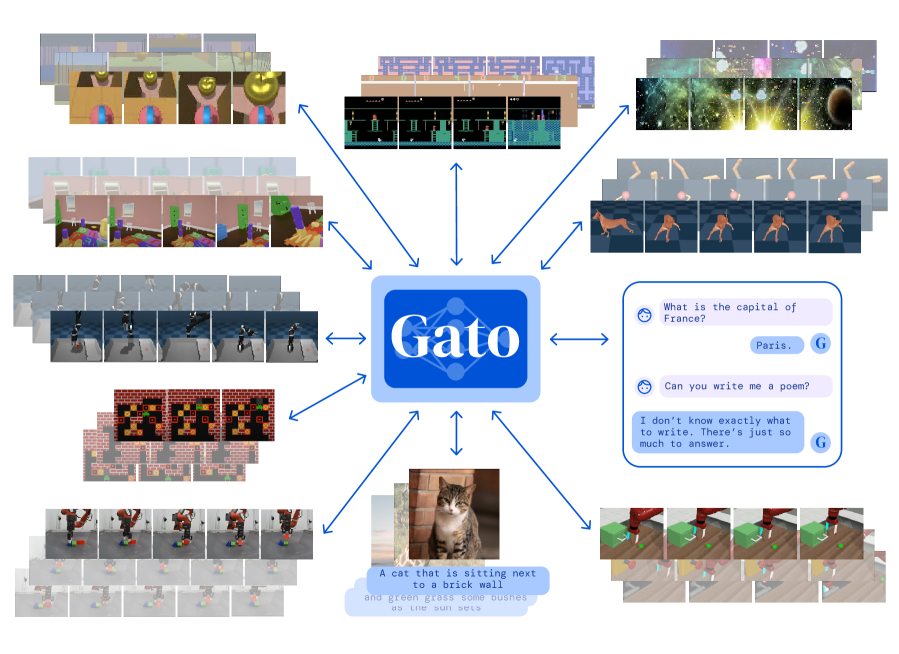
1 서론 (Introduction)
모든 작업에 걸쳐 단일 신경 시퀀스 모델을 사용하는 것에는 상당한 이점이 있다. 이는 각 도메인에 적합한 귀납적 편향(inductive bias)을 가진 정책 모델을 수작업으로 설계할 필요성을 줄여준다. 시퀀스 모델은 평탄한 시퀀스(flat sequence)로 직렬화할 수 있는 모든 데이터를 수용할 수 있기 때문에 학습 데이터의 양과 다양성을 증가시킨다. 나아가, 데이터, 컴퓨팅 및 모델 규모의 한계에서도 그 성능은 계속해서 향상된다 (Kaplan et al., 2020; Hoffmann et al., 2022). 역사적으로, 컴퓨팅 자원을 더 잘 활용하는 범용 모델은 결국 더 전문화된 도메인 특정 접근 방식들을 추월하는 경향이 있었다 (Sutton, 2019).
본 논문에서 우리는 단일 대형 트랜스포머 시퀀스 모델로 구현된, Gato라고 부르는 범용 에이전트의 현재 버전을 설명한다. 단일 가중치 세트만으로 Gato는 대화에 참여하고, 이미지 캡션을 작성하고, 실제 로봇 팔로 블록을 쌓고, 아타리 게임에서 인간을 능가하는 성능을 보이며, 시뮬레이션된 3D 환경을 탐색하고, 지시를 따르는 등의 작업을 수행할 수 있다.
어떤 에이전트도 상상할 수 있는 모든 제어 작업, 특히 학습 분포를 크게 벗어나는 작업에서 뛰어날 수는 없지만, 우리는 여기서 수많은 작업에 대해 일반적으로 능력을 발휘하는 에이전트를 학습시키는 것이 가능하다는 가설과, 이 일반주의 에이전트가 약간의 추가 데이터만으로 훨씬 더 많은 작업에서 성공하도록 적응할 수 있다는 가설을 검증한다. 우리는 데이터, 컴퓨팅 및 모델 매개변수를 확장하고, 성능을 유지하면서 학습 분포를 지속적으로 넓힘으로써 관심 있는 모든 작업, 행동 및 신체를 아우르는 에이전트를 얻을 수 있다는 가설을 세운다. 이러한 설정에서 자연어는 서로 호환되지 않는 신체들 사이에서 공통의 접지(grounding) 역할을 하여, 새로운 행동에 대한 조합적 일반화(combinatorial generalization)를 가능하게 한다.
우리는 실제 환경의 로봇을 실시간으로 제어할 수 있는 모델 규모의 작동 지점에 학습을 집중하고 있으며, 현재 Gato의 경우 약 12억(1.2B) 개의 매개변수 수준이다. 하드웨어와 모델 아키텍처가 개선됨에 따라, 이 작동 지점은 자연스럽게 실현 가능한 모델 크기를 증가시켜 일반주의 모델을 스케일링 법칙(scaling law) 곡선의 더 높은 곳으로 밀어 올릴 것이다. 단순성을 위해 Gato는 순수하게 지도 학습(supervised) 방식으로 오프라인 학습되었으나, 원칙적으로 오프라인 또는 온라인 강화 학습(RL)으로 학습되지 못할 이유는 없다.
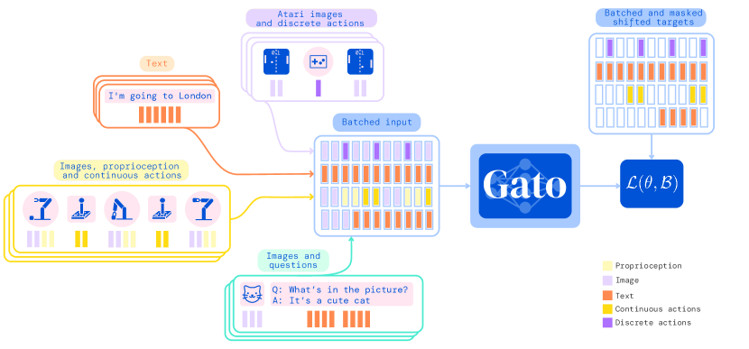
2 모델 (Model)
Gato의 핵심 설계 원칙은 이미지, 텍스트, 고유 감각(proprioception), 관절 토크, 버튼 입력 및 기타 이산적이고 연속적인 관측치와 행동을 포함하여 가능한 가장 다양한 관련 데이터에 대해 학습하는 것이다. 이러한 다중 모달 데이터를 처리할 수 있도록, 우리는 모든 데이터를 토큰의 평탄한 시퀀스로 직렬화한다. 이 표현 방식 내에서 Gato는 표준 대규모 언어 모델과 유사하게 학습되고 샘플링될 수 있다. 배포(deployment) 중에 샘플링된 토큰들은 컨텍스트에 따라 대화 응답, 캡션, 버튼 입력 또는 기타 행동으로 조립된다. 다음 하위 섹션에서는 Gato의 토큰화(tokenization), 네트워크 아키텍처, 손실 함수 및 배포에 대해 설명한다.
2.1 토큰화 (Tokenization)
원시 바이트 스트림을 직접 사용하는 것을 포함하여 데이터를 토큰으로 변환하는 방법은 무수히 많다. 아래에서는 현대적인 하드웨어와 모델 아키텍처를 사용하여 현재 규모에서 Gato에 가장 좋은 결과를 제공하는 것으로 확인된 토큰화 방식을 설명한다.
-
•
텍스트는 32,000개의 서브워드를 가진 SentencePiece (Kudo & Richardson, 2018)를 통해 정수 범위 [0, 32000)로 인코딩된다.
-
•
이미지는 ViT (Dosovitskiy et al., 2020)에서와 같이 먼저 래스터 순서(raster order)로 겹치지 않는 패치 시퀀스로 변환된다. 그런 다음 이미지 패치의 각 픽셀은 사이로 정규화되고 패치 크기의 제곱근(즉, )으로 나누어진다.
-
•
아타리 버튼 입력과 같은 이산형 값(discrete values)은 행 우선 순서(row-major order)로 정수 시퀀스로 평탄화된다. 토큰화된 결과는 범위 내의 정수 시퀀스이다.
-
•
고유감각 입력(proprioceptive inputs)이나 관절 토크(joint torques)와 같은 연속형 값은 먼저 행 우선 순서(row-major order)로 부동 소수점 값의 시퀀스로 평탄화(flatten)된다. 이 값들은 아직 변환되지 않은 경우 범위로 뮤-법칙(mu-law) 인코딩된 후(자세한 내용은 그림 14 참조), 1024개의 균일한 빈(bin)으로 이산화된다. 그 다음 이산 정수들은 범위로 시프트된다.
데이터를 토큰으로 변환한 후, 우리는 다음과 같은 표준 시퀀스 순서를 사용한다.
-
•
텍스트 토큰은 원본 입력 텍스트와 동일한 순서로 배치된다.
-
•
이미지 패치 토큰은 래스터 순서(raster order)로 배치된다.
-
•
텐서는 행 우선 순서로 배치된다.
-
•
중첩 구조는 키(key) 기준 사전식 순서(lexicographical order)로 배치된다.
-
•
에이전트 타임스텝은 관측 토큰, 구분자, 그리고 행동 토큰 순서로 배치된다.
-
•
에이전트 에피소드는 시간 순서에 따른 타임스텝으로 배치된다.
에이전트 데이터 토큰화에 대한 자세한 내용은 부록(섹션 B)에 제시되어 있다.
2.2 입력 토큰 임베딩 및 출력 타겟 설정
토큰화 및 시퀀스화 이후, 우리는 각 토큰(즉, 관측과 행동 모두에 적용됨)에 매개변수화된 임베딩 함수 를 적용하여 최종 모델 입력을 생성한다. 다중 모달(multi-modal) 입력 시퀀스 로부터 효율적인 학습을 가능하게 하기 위해, 임베딩 함수는 토큰이 유래한 모달리티에 따라 서로 다른 연산을 수행한다:
-
•
임의의 타임스텝에 대한 텍스트, 이산형 또는 연속형 값의 관측이나 행동에 해당하는 토큰은 룩업 테이블을 통해 학습된 벡터 임베딩 공간으로 임베딩된다. 해당 타임스텝 내에서의 로컬 토큰 위치를 기반으로 모든 토큰에 대해 학습 가능한 위치 인코딩(position encoding)이 추가된다.
-
•
임의의 타임스텝에 대한 이미지 패치에 해당하는 토큰은 단일 ResNet (He et al., 2016a) 블록을 사용하여 임베딩되어 패치당 하나의 벡터를 얻는다. 이미지 패치 토큰 임베딩의 경우, 이미지 내부 위치를 나타내는 학습 가능한 이미지 내 위치 인코딩 벡터도 추가한다.
임베딩 함수에 대한 자세한 내용은 부록 섹션 C.3을 참조한다.
데이터를 자기회귀(autoregressive) 방식으로 모델링하므로, 각 토큰은 이전 토큰들이 주어졌을 때 잠재적인 타겟 레이블이 되기도 한다. 텍스트 토큰, 이산 및 연속형 값, 그리고 행동은 토큰화 후에 직접 타겟으로 설정될 수 있다. 이미지 토큰과 에이전트의 비텍스트 관측치는 현재 Gato에서 예측되지 않지만, 이는 향후 연구를 위한 흥미로운 방향이 될 수 있다. 이러한 비예측 토큰의 타겟은 사용되지 않는 값으로 설정되며, 손실(loss)에 대한 기여도는 마스킹 처리된다.
2.3 학습
토큰 시퀀스 와 매개변수 이 주어졌을 때, 우리는 확률의 연쇄 법칙(chain rule of probability)을 사용하여 데이터를 모델링한다:
| (1) |
을 시퀀스 의 학습 배치 인덱스라고 하자. 우리는 인덱스 의 토큰이 텍스트에서 나왔거나 에이전트의 기록된 행동에서 나온 경우 이고, 그렇지 않은 경우 가 되도록 마스킹 함수 를 정의한다. 그러면 배치 에 대한 학습 손실은 다음과 같이 작성할 수 있다.
| (2) |
위에서 설명한 바와 같이, Gato의 네트워크 아키텍처는 토큰을 토큰 임베딩으로 변환하는 매개변수화된 임베딩 함수와 다음 이산 토큰에 대한 분포를 출력하는 시퀀스 모델이라는 두 가지 주요 구성 요소로 이루어져 있습니다. 다음 토큰 예측에는 어떠한 일반적인 시퀀스 모델도 작동할 수 있지만, 단순성과 확장성을 위해 트랜스포머(Transformer) (Vaswani et al., 2017)를 선택했습니다. Gato는 24개 레이어, 임베딩 크기 2048, 어텐션 후 피드포워드 은닉 크기 8196을 갖춘 1.2B 매개변수의 디코더 전용 트랜스포머를 사용합니다(자세한 내용은 섹션 C.1 참조).
도메인 내의 서로 다른 태스크들이 동일한 에이전트 신체(embodiment), 관측 형식 및 액션 사양을 공유할 수 있기 때문에, 모델은 때때로 태스크를 명확히 구분하기 위해 추가적인 컨텍스트가 필요합니다. 예를 들어 원-핫(one-hot) 태스크 식별자를 제공하는 대신, 우리는 (Sanh et al., 2022; Wei et al., 2021; Brown et al., 2020)에서 영감을 얻어 프롬프트 조건화(prompt conditioning)를 사용합니다. 학습 과정에서 각 배치의 시퀀스 중 에 대해, 동일한 태스크에서 동일한 소스 에이전트가 생성한 에피소드로부터 가져온 프롬프트 시퀀스를 앞에 붙입니다. 프롬프트 시퀀스의 절반은 에피소드의 끝부분에서 가져오며, 이는 많은 도메인에서 일종의 목표 조건화(goal conditioning) 역할을 합니다. 나머지 절반은 에피소드에서 균등하게 샘플링됩니다. 평가 과정에서는 원하는 태스크의 성공적인 시연(demonstration)을 사용하여 에이전트에 프롬프트를 제공할 수 있으며, 본 논문에서 제시하는 모든 제어 결과에서는 이를 기본값으로 수행합니다.
모델 학습은 16x16 TPU v3 슬라이스에서 배치 크기 512, 토큰 시퀀스 길이 으로 1M 스텝 동안 수행되며, 약 4일이 소요됩니다. 아키텍처에 대한 자세한 내용은 섹션 C에서 확인할 수 있습니다. 에이전트 에피소드와 문서는 컨텍스트에 들어갈 수 있는 것보다 훨씬 더 많은 토큰을 쉽게 포함할 수 있으므로, 사용 가능한 에피소드에서 개 토큰의 서브시퀀스를 무작위로 샘플링합니다. 각 배치는 도메인(예: Atari, MassiveWeb 등)에 대해 대략 균등하게 서브시퀀스를 혼합하며, 더 크고 품질이 높은 데이터셋에 대해서는 일부 수동으로 가중치를 높입니다(자세한 내용은 섹션 3의 표 1 참조).
2.4 배포 (Deployment)
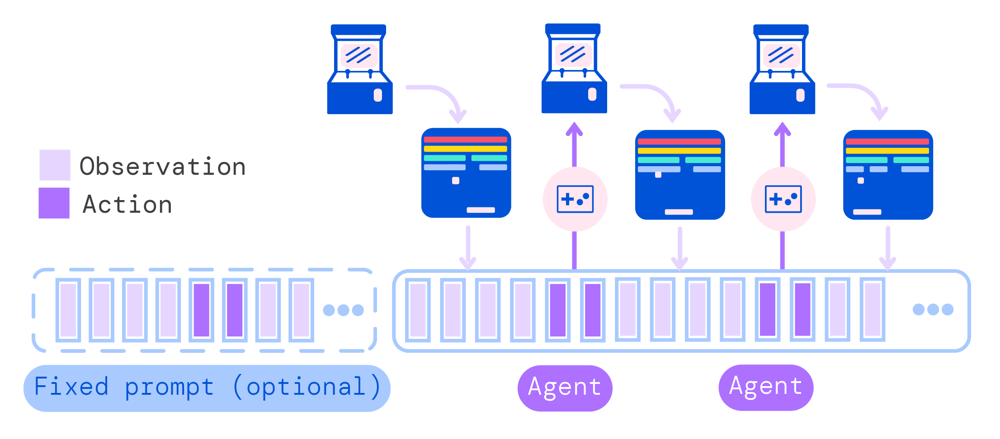
Gato를 정책으로 배포하는 과정은 그림 3에 나와 있습니다. 먼저 시연과 같은 프롬프트가 토큰화되어 초기 시퀀스를 형성합니다. 기본적으로 우리는 시연의 처음 1024개 토큰을 사용합니다. 그 다음 환경은 토큰화되어 시퀀스에 추가되는 첫 번째 관측을 제공합니다. Gato는 한 번에 하나의 토큰씩 자기회귀적으로 액션 벡터를 샘플링합니다. 액션 벡터를 구성하는 모든 토큰이 샘플링되면(환경의 액션 사양에 의해 결정됨), 섹션 2.1에서 설명한 토큰화 절차를 역으로 수행하여 액션을 디코딩합니다. 이 액션은 환경으로 전송되어 환경을 한 단계 진행시키고 새로운 관측을 제공합니다. 이 절차가 반복됩니다. 모델은 항상 1024개 토큰의 컨텍스트 창 내에서 이전의 모든 관측과 액션을 봅니다. 학습 중에는 사용되지 않았지만, 배포 중에는 트랜스포머 XL(transformer XL) 메모리를 사용하는 것이 유익하다는 것을 발견했습니다 (Dai et al., 2019).
3 데이터셋
Gato는 시뮬레이션 및 실제 환경 모두에서의 에이전트 경험과 다양한 자연어 및 이미지 데이터셋으로 구성된 방대한 양의 데이터셋으로 학습됩니다. 우리가 사용하는 데이터셋과 그 속성은 표 1에 나열되어 있습니다. 제어 데이터셋당 대략적인 토큰 수는 섹션 2.1에서 설명한 토큰화 메커니즘을 가정하여 계산됩니다.
| Control environment | Tasks | Episodes | Approx. Tokens | Sample Weight |
| DM Lab | 254 | 16.4M | 194B | 9.35% |
| ALE Atari | 51 | 63.4K | 1.26B | 9.5% |
| ALE Atari Extended | 28 | 28.4K | 565M | 10.0% |
| Sokoban | 1 | 27.2K | 298M | 1.33% |
| BabyAI | 46 | 4.61M | 22.8B | 9.06% |
| DM Control Suite | 30 | 395K | 22.5B | 4.62% |
| DM Control Suite Pixels | 28 | 485K | 35.5B | 7.07% |
| DM Control Suite Random Small | 26 | 10.6M | 313B | 3.04% |
| DM Control Suite Random Large | 26 | 26.1M | 791B | 3.04% |
| Meta-World | 45 | 94.6K | 3.39B | 8.96% |
| Procgen Benchmark | 16 | 1.6M | 4.46B | 5.34% |
| RGB Stacking simulator | 1 | 387K | 24.4B | 1.33% |
| RGB Stacking real robot | 1 | 15.7K | 980M | 1.33% |
| Modular RL | 38 | 843K | 69.6B | 8.23% |
| DM Manipulation Playground | 4 | 286K | 6.58B | 1.68% |
| Playroom | 1 | 829K | 118B | 1.33% |
| Total | 596 | 63M | 1.5T | 85.3% |
| Vision / language dataset | Sample Weight |
| MassiveText | 6.7% |
| M3W | 4% |
| ALIGN | 0.67% |
| MS-COCO Captions | 0.67% |
| Conceptual Captions | 0.67% |
| LTIP | 0.67% |
| OKVQA | 0.67% |
| VQAV2 | 0.67% |
| Total | 14.7% |
3.1 시뮬레이션 제어 태스크
우리의 제어 태스크는 다양한 환경에서 학습된 전문적인 최고 수준(SoTA) 또는 최고 수준에 근접한 강화학습 에이전트들에 의해 생성된 데이터셋으로 구성됩니다. 각 환경에 대해 에이전트가 학습하는 동안 생성하는 경험(상태, 액션, 보상)의 일부를 기록합니다.
시뮬레이션 환경에는 메타 강화학습 및 다중 태스크 학습의 벤치마크로 도입된 Meta-World (Yu et al., 2020), 계획 문제로 제안된 Sokoban (Racanière et al., 2017), 격자 세상에서의 언어 지시 따르기를 위한 BabyAI (Chevalier-Boisvert et al., 2018), 연속 제어를 위한 DM Control Suite (Tunyasuvunakool et al., 2020), 그리고 에이전트에게 1인칭 시점의 원시 픽셀로부터 내비게이션과 3D 비전을 가르치도록 설계된 DM Lab (Beattie et al., 2016)이 포함됩니다. 또한 고전 Atari 게임이 포함된 Arcade Learning Environment (Bellemare et al., 2013)도 사용합니다(우리는 이를 ALE Atari 및 ALE Atari Extended라고 부르는 두 가지 게임 세트로 사용하며, 자세한 내용은 섹션 F.1을 참조하십시오). Procgen Benchmark (Cobbe et al., 2020) 및 Modular RL (Huang et al., 2020)도 포함합니다. 또한 Zolna et al. (2020)에서 소개된 DM Manipulation Playground의 시뮬레이션된 Kinova Jaco 로봇 팔을 사용하는 네 가지 태스크도 포함합니다. 섹션 F에는 이러한 제어 태스크에 대한 더 심층적인 설명과 데이터를 생성하는 데 어떤 RL 에이전트가 사용되었는지가 포함되어 있습니다.
우리는 해당 태스크에 대한 전문가 리턴(return)의 최소 80% 이상인 리턴을 가진 필터링된 에피소드 세트에서 학습하는 것이 효과적임을 발견했습니다. 전문가 리턴은 전문가 에이전트가 달성할 수 있는 최대 지속 성능을 측정합니다. 우리는 이를 한 태스크에 대해 수집된 모든 에피소드에서 계산된 모든 윈도우 평균 리턴 세트의 최댓값으로 정의합니다.
여기서 은 해당 태스크에 대해 수집된 총 에피소드 수이고, 은 윈도우 크기이며, 는 에피소드 에 대한 총 리턴입니다. 정확한 추정치를 얻기 위해, 실제로는 를 총 데이터 양의 또는 최소 1000개의 에피소드(즉, )로 설정합니다.
3.2 비전 및 언어
Gato는 웹 페이지, 도서, 뉴스 기사 및 코드 등 다양한 출처에서 수집된 대규모 영어 텍스트 데이터셋 모음인 MassiveText (Rae et al., 2021)으로 학습됩니다.
우리는 또한 Gato의 학습에 여러 비전-언어 데이터셋을 포함했습니다. ALIGN (Jia et al., 2021)은 1.8B개의 이미지와 해당 대체 텍스트(alt-text) 주석으로 구성됩니다. LTIP(Long Text & Image Pairs)는 캡션이 포함된 312M개의 이미지로 구성됩니다 (Alayrac et al., 2022). Conceptual captions (Sharma et al., 2018) 및 COCO captions (Chen et al., 2015)은 각각 3.3M 및 120k개의 이미지-텍스트 쌍을 가진 캡션 데이터셋입니다. MultiModal MassiveWeb(M3W) 데이터셋 (Alayrac et al., 2022)은 텍스트와 이미지가 모두 추출된 43M개의 웹페이지를 포함합니다. 우리는 또한 시각적 질의응답(visual question-answering) 데이터셋을 포함했습니다. 특히 OKVQA (Marino et al., 2019) 및 VQAv2 (Antol et al., 2015)은 각각 9K 및 443K개의 이미지, 질문, 답변 트리플렛(triplet)을 포함합니다. 이들로부터 학습 에피소드를 구성하기 위해, 5개의 (이미지, 텍스트) 쌍을 샘플링하고, 토큰화하고, 연결한 다음, 필요한 학습 시퀀스 길이에 맞게 패딩하거나 무작위로 크롭(crop)합니다.
3.3 로보틱스 - RGB Stacking 벤치마크 (실제 및 시뮬레이션)
실세계에서 물리적 행동을 수행하는 테스트베드로서, 우리는 Lee et al. (2021)에서 도입된 로봇 블록 쌓기 환경을 선택했다. 이 환경은 3자유도(3-DoF) 데카르트 속도 제어, 속도를 위한 추가 자유도, 그리고 이산형 그리퍼 동작을 가진 Sawyer 로봇 팔로 구성된다. 로봇의 작업 공간에는 다양한 모양을 가진 빨간색, 초록색, 파란색의 플라스틱 블록 3개가 포함되어 있다. 사용 가능한 관측치에는 두 개의 128 128 카메라 이미지, 로봇 팔 및 그리퍼 관절 각도, 그리고 로봇의 말단 효과기(end-effector) 포즈가 포함된다. 특히, 바구니 안에 있는 세 물체의 참값 상태(ground truth state) 정보는 에이전트에게 관측되지 않는다. 에피소드는 20 Hz에서 400 타임스텝의 고정된 길이를 가지며 총 20초 동안 지속되고, 에피소드가 끝날 때 블록 위치는 작업 공간 내에서 무작위로 재배치된다. 작동 중인 로봇은 그림 4에 나와 있다. 이 벤치마크에는 두 가지 도전 과제가 있다: 기술 숙련(Skill Mastery) (에이전트에게 나중에 테스트할 5개의 테스트 물체 삼중쌍 데이터를 제공함)과 기술 일반화(Skill Generalization) (5개의 테스트 세트를 제외한 학습용 물체 세트에서만 데이터를 얻을 수 있음)이다.
우리는 이러한 작업들을 위해 여러 소스의 학습 데이터를 사용했다. 기술 일반화(Skill Generalization)에서는 시뮬레이션과 실제 환경 모두에 대해 Lee et al. (2021)의 최고 성능을 내는 일반주의 sim2real 에이전트가 수집한 데이터를 사용한다. 우리는 지정된 RGB 쌓기 학습용 물체들과 상호작용할 때만 데이터를 수집했다(이는 시뮬레이션에서 총 38.7만 개의 성공적인 궤적, 실제 환경에서 1.5만 개의 궤적에 해당한다). 기술 숙련(Skill Mastery)의 경우 시뮬레이션에서는 Lee et al. (2021)의 그룹별 최고 전문가로부터, 실제 로봇에서는 최고의 sim2real 정책으로부터 얻은 데이터를 사용했다(총 21.9만 개의 궤적에 해당). 이 데이터는 섹션 5.4의 특정 기술 숙련 실험에만 포함된다는 점에 유의하라.
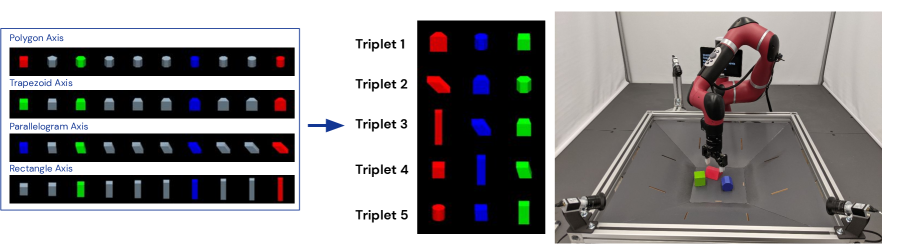
4 일반주의 에이전트의 능력
이 섹션에서는 위에서 설명한 데이터로 학습되었을 때 Gato의 성능을 요약한다. 즉, 모든 작업에 걸친 모든 결과는 단일 가중치 세트를 가진 단일 사전 학습된 모델로부터 도출된 것이다. 미세 조정(fine-tuning)을 통한 결과는 섹션 5에서 제시될 것이다.
4.1 시뮬레이션 제어 작업
그림 5은 Gato의 학습 데이터에서 입증된 전문가 성능 대비, Gato가 주어진 점수 임계값 이상을 수행하는 고유한 제어 작업의 수를 보여준다.
우리는 성능을 백분율로 보고하며, 여기서 은 작업별 전문가에 해당하고 은 무작위 정책에 해당한다. 우리가 모델을 학습시킨 각 시뮬레이션 제어 작업에 대해, 해당 환경에서 Gato 정책을 50회 롤아웃하고 정의된 점수를 평균한다. 그림 5에 나타난 바와 같이, Gato는 604개 작업 중 450개 이상의 작업에서 전문가 점수 임계값 이상으로 수행한다.

ALE Atari (Bellemare et al., 2013)에서 Gato는 23개의 Atari 게임에 대해 인간 평균 점수 이상을 달성하며111게임 전체 목록: Assault, Atlantis, Bank heist, Battle zone, Bowling, Crazy climber, Defender, Fishing derby, Gopher, Hero, Ice hockey, Jamesbond, Kangaroo, Kung fu master, Name this game, Pong, Road runner, Robotank, Tennis, Time pilot, Up n down, Wizard of wor, Zaxxon., 11개 게임에서는 인간 점수의 2배 이상을 달성한다. 데이터를 생성한 단일 작업 온라인 RL 에이전트들이 여전히 Gato보다 우수한 성능을 보이지만, 이는 용량을 추가하거나 순수 지도 학습 대신 오프라인 RL 학습을 사용함으로써 극복할 수 있다(44개 게임에서 인간보다 나은 점수를 달성하는 전문 단일 도메인 ALE Atari 에이전트를 제시하는 섹션 5.5을 참조하라).
BabyAI (Chevalier-Boisvert et al., 2018)에서 Gato는 거의 모든 레벨에 대해 전문가 점수의 80% 이상을 달성한다222성공률이 80% 미만인 세 가지 작업은 GoToImpUnlock (59%), Unlock (74%), BossLevel (75%)뿐이다.. BossLevel이라고 불리는 가장 어려운 작업에서 Gato는 75점을 기록했다. 우리가 찾을 수 있었던 다른 두 개의 발표된 베이스라인인 BabyAI 1.0과 BabyAI 1.1 (Hui et al., 2020)은 100만 개의 데모를 사용하여 이 단일 작업만을 학습한 후 각각 77%와 90%를 기록했다.
Meta-World (Yu et al., 2020)에서 Gato는 우리가 학습시킨 45개 작업 중 44개 작업 전체에 대해 50% 이상을 달성하고, 35개 작업에 대해 80% 이상, 3개 작업에 대해 90% 이상을 달성한다. 표준 DM Control Suite (Tassa et al., 2018)에서 Gato는 상태(state)로부터 입력받는 30개 작업 중 21개 작업에서 전문가 점수의 50%보다 나은 성능을 달성하고, 18개 작업에 대해 80% 이상을 달성한다.
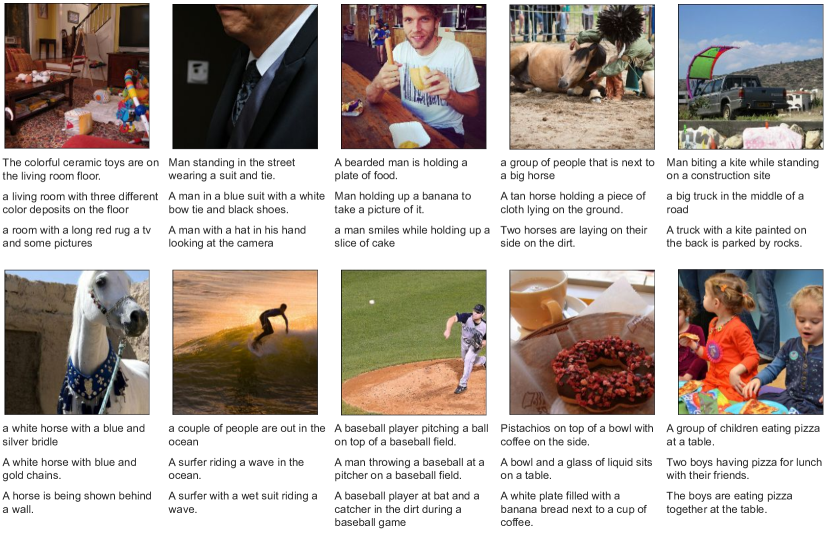
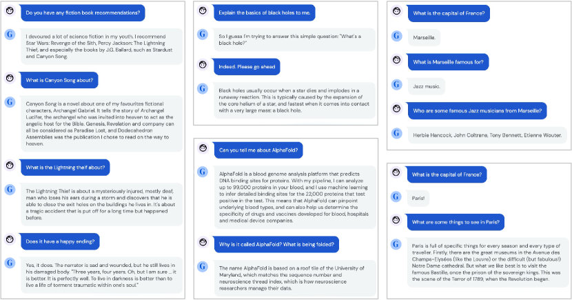
4.2 로봇 공학
1인칭 원격 조작(teleoperation)은 전문가 데모 수집을 가능하게 한다. 그러나 이러한 데모는 수집하는 데 시간이 오래 걸리고 비용이 많이 든다. 따라서 일반주의 로봇 매니퓰레이터를 학습시키기 위해서는 데이터 효율적인 행동 복제(behavior cloning) 방법이 바람직하며, 오프라인 사전 학습은 충분히 동기 부여된 연구 분야이다. 이를 위해 우리는 로봇 공학을 위해 확립된 RGB 쌓기(RGB Stacking) 벤치마크에서 Gato를 평가했다.
기술 일반화 성능
RGB 쌓기 로봇 공학 벤치마크의 기술 일반화(Skill Generalization) 과제는 이전에 보지 못한 모양의 물체를 쌓는 에이전트의 능력을 테스트한다. 에이전트는 로봇이 다양한 모양의 물체를 쌓는 에피소드로 구성된 데이터셋으로 학습된다. 그러나 물체 모양의 5가지 삼중쌍은 학습 데이터에 포함되지 않으며 테스트 삼중쌍 역할을 한다. 우리는 실제 로봇에서 테스트 삼중쌍당 200 에피소드 동안 학습된 일반주의 에이전트를 평가했다. 표 2은 각 테스트 삼중쌍에 대한 우리 일반주의 에이전트의 성공률이 Lee et al. (2021)의 단일 작업 BC-IMP(필터링된 BC) 베이스라인과 유사함을 보여준다.
| Agent | Group 1 | Group 2 | Group 3 | Group 4 | Group 5 | Average |
| Gato | 24.5% | 33% | 50.5% | 76.5% | 66.5% | 50.2% |
| BC-IMP (Lee et al., 2021) | 23% | 39.3% | 39.3% | 77.5% | 66% | 49% |
4.3 텍스트 샘플
5 분석
5.1 스케일링 법칙(Scaling Laws) 분석

5.2 분포 외(Out of distribution) 작업
이 섹션에서는 다음과 같은 질문에 답하고자 한다: 우리 에이전트가 완전히 새로운 작업을 효율적으로 해결하는 데 사용될 수 있는가? 이러한 이유로, 우리는 사전 학습 데이터셋에서 다음 네 가지 작업에 대한 모든 데이터를 제외(Held-out)했다: cartpole.swingup (DM Control Suite 도메인), assembly-v2 (Meta-World 도메인), order_of_apples_forage_simple (DM Lab 도메인), 그리고 boxing (ALE Atari 도메인). 이 네 가지 작업은 Gato의 분포 외 성능을 평가하기 위한 테스트베드 역할을 할 것이다.
이상적으로는 에이전트가 원하는 행동의 데모(Demonstration)를 포함하는 프롬프트에 컨디셔닝됨으로써 새로운 작업에 적응하는 법을 배울 수 있을 것이다. 그러나 가속기 메모리 제약과 토큰화된 데모의 극도로 긴 시퀀스 길이로 인해, 가능한 최대 컨텍스트 길이는 에이전트가 충분히 유용한 정보를 담은 컨텍스트를 참조(Attend)할 수 있도록 허용하지 않는다. 따라서 에이전트를 새로운 작업이나 행동에 적응시키기 위해, 우리는 단일 작업의 제한된 수의 데모에 대해 에이전트의 파라미터를 미세 조정(Fine-tuning)한 다음, 환경에서 미세 조정된 모델의 성능을 평가하는 방식을 선택한다. 미세 조정은 학습률 스케줄(Learning Rate Schedule)의 변경과 같은 사소한 차이를 제외하고는 사전 학습과 매우 유사하다. 자세한 내용은 섹션 E을 참조한다.
우리는 사전 학습 중에 사용된 데이터의 선택이 미세 조정 후 성능에 어떤 영향을 미치는지 측정하고자 한다. 이를 위해, Gato(모든 데이터로 학습됨)를 절제된(Ablated) 데이터셋으로 학습된 변형 모델들과 비교한다:
-
1.
미세 조정할 작업과 동일한 도메인의 데이터로만 사전 학습된 모델, 즉 동일 도메인 전용 데이터(same domain only data).
-
2.
제어(Control) 데이터가 아닌 데이터로만 사전 학습된 모델, 즉 제어 데이터 없음(no control data).
-
3.
처음부터 미세 조정된 모델, 즉 사전 학습이 전혀 없는 스크래치(scratch).
이 모든 실험들은 새로운 모델을 처음부터 학습시킨 다음 미세 조정까지 해야 한다는 점을 고려하여, 섹션 5.1에 설명된 연산 집약도가 낮은 364M 파라미터 아키텍처를 사용한 결과를 제시한다. 결과는 그림 9에 나와 있다.
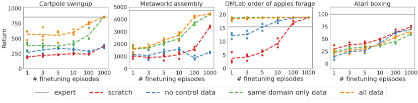
이미지 처리가 필요하지 않은 cartpole.swingup 및 assembly-v2 작업 모두에 대한 미세 조정 성능은 유사한 경향을 보인다. 모든 데이터셋에 대해 사전 학습을 진행했을 때 가장 좋은 결과를 얻었으며, 동일한 도메인만으로 사전 학습한 경우가 그 뒤를 이었다. 이 차이는 assembly-v2에서는 더 작았지만 모든 퓨샷 데이터셋에 대해 일관되게 나타났다. 이러한 비이미지 기반 환경의 경우, 이미지와 텍스트 데이터만 포함된 제어 데이터 없음(no control) 데이터셋으로 사전 학습했을 때 아무런 이득이 없거나(cartpole.swingup) 심지어 부정적인 전이(Negative Transfer)가 발생하는 것(assembly-v2)을 볼 수 있다.
DM Lab의 order_of_apples_forage_simple에 대한 결과는 약간 다르다. DM Lab 데이터만으로 사전 학습하는 것만으로도 이미 최대 보상인 19에 도달하기에 충분하므로, 다른 환경의 데이터를 추가하는 데서 오는 뚜렷한 이점은 관찰되지 않는다. 이전에 분석한 비시각(no-vision) 환경과 비교했을 때 다른 점은, 제어 없음(no control) 데이터로 사전 학습하는 것이 도움이 된다는 점이다. 이는 DM Lab 환경의 에이전트에게 제공되는 이미지가 시뮬레이션임에도 불구하고 자연스럽게 보인다는 사실로 설명할 수 있을 것이다. 따라서 이미지 캡셔닝이나 시각 기반 질의응답(visual grounded question answering) 태스크로부터의 전이가 가능하다.
우리는 boxing에 대한 사전 학습에서 어떠한 이점도 관찰할 수 없었다. 무작위로 초기화된 모델이 고려된 사전 학습 변형 모델들보다 더 잘 작동하는 것으로 보인다. 우리는 이것이 게임의 입력 이미지가 다른 데이터와 시각적으로 매우 다르기 때문에 발생한 현상이며, 이로 인해 전이가 어려웠음을 시사한다고 가설을 세웠다. 이 아타리(Atari) 과제에 대해서는 관련 연구 섹션에서 더 자세히 논의한다.
5.3 로봇 쌓기 태스크에서의 미세 조정(Fine-tuning)
섹션 4.2은 다양한 태스크를 수행할 수 있는 기본 Gato가 RGB 쌓기 기술 일반화(RGB Stacking Skill Generalization) 벤치마크에서 경쟁력 있는 성능을 보일 수 있음을 입증한다. 본 섹션에서는 다음 질문에 답하고자 한다. 섹션 5.2에서 새로운 태스크에 미세 조정을 수행한 것과 유사하게 미세 조정을 허용했을 때, 우리 에이전트는 로봇 공학 태스크에서 어떻게 향상되는가? 우리는 다양한 모델 크기를 고려하고 사전 학습 데이터셋이 기술 일반화 벤치마크 및 새로운 분포 외(out of distribution) 태스크에 미치는 영향을 분석한다. 데이터셋 절제 연구(ablation)를 포함한 미세 조정에 대한 추가 분석은 부록 I에 수록되어 있다.
기술 일반화(Skill Generalization)
|
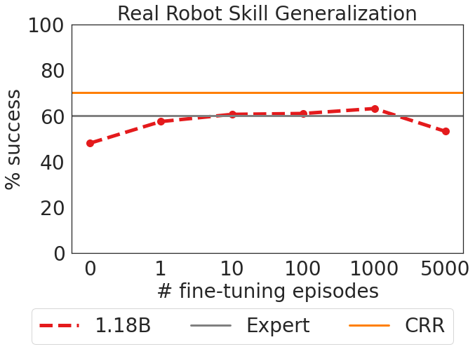 |
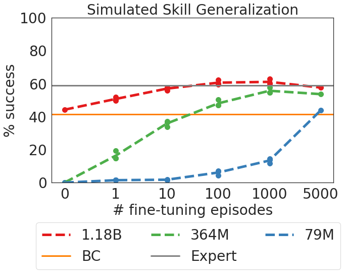 |
먼저, Lee et al. (2022)에서 수행한 것과 유사하게 객체 특정(object-specific) 데이터에 대해 미세 조정을 하는 것이 유익하다는 것을 보여주고자 한다. 따라서 우리는 test 데이터셋의 시연(demonstrations) 중 5개 서브셋에 대해 Gato를 각각 개별적으로 미세 조정했다. 각 서브셋은 실제 테스트 객체를 쌓는 일반주의 시뮬레이션-투-리얼(sim-to-real) 에이전트가 수집한 시연으로 구성된 테스트 데이터셋을 무작위로 분할하여 얻었다. 우리는 (Lee et al., 2022)의 RGB 쌓기 태스크에 대한 미세 조정 베이스라인과 비교 가능한 이 설정을 고려하며, 그들의 행동 복제(behavior cloning) 5k 결과를 얻는 데 사용된 5k 데이터셋을 사용한다. 그들의 실험과 가장 잘 일치시키기 위해 학습 중 반환값 필터링(return filtering) 방식을 변경한다. 즉, 성공적인 쌓기만 사용하는 대신 에피소드의 정규화된 반환값을 조건으로 부여한다.
그림 10은 다양한 미세 조정 데이터 체계에 걸친 Gato의 성공률을 시뮬레이션-투-리얼 전문가 및 모든 테스트 삼중쌍의 35k 에피소드로 학습된 비평가-정규화 회귀(Critic-Regularized Regression, CRR) (Wang et al., 2020) 에이전트와 비교한다. Gato는 실제 환경과 시뮬레이션 환경 모두에서(각각 왼쪽과 오른쪽 그림의 빨간색 곡선), 단 10개의 에피소드만으로 전문가의 성능을 회복하며, 미세 조정 데이터가 100개 또는 1000개일 때 최고조에 달해 전문가의 성능을 넘어선다. 이 지점 이후(5000개에서) 성능이 약간 저하되지만 전문가의 성능보다 훨씬 아래로 떨어지지는 않는다.
미세 조정 및 모델 크기
로봇 공학 영역에서 소수샷 적응(few-shot adaptation)에 대한 대형 모델의 이점을 더 잘 이해하기 위해, 모델 매개변수 크기에 대한 절제 연구를 수행했다. 이 섹션은 시뮬레이션 내 평가에 초점을 맞춘다. 그림 10은 미세 조정 데이터의 양을 변화시키면서 전체 1.18B 매개변수 Gato를 더 작은 364M 및 79M 매개변수 변형 모델들과 비교한다. 364M 모델은 하나의 에피소드에서 과적합(overfitting)이 발생하여 성능이 떨어지지만, 매개변수 수가 확장됨에 따라 더 적은 에피소드로 더 잘 적응하는 명확한 경향이 존재한다. 79M 모델은 더 큰 모델들에 비해 명확하게 저조한 성능을 보인다. 이 결과는 모델의 더 큰 용량 덕분에 테스트 시점에 다양한 학습 데이터로부터 학습된 표현을 모델이 활용할 수 있음을 시사한다.
지각적 변화에 대한 적응
기술 일반화 태스크는 형태 변화에 대한 운동 기술 일반화를 평가하는 효과적인 벤치마크이지만, 지각적 변화 및 목표 사양의 순열에 적응하는 에이전트의 능력을 테스트하지는 않는다. Gato의 일반화 능력을 추가로 평가하기 위해, 우리는 테스트 삼중쌍 1에 대해 초록색 객체 위에 파란색 객체를 쌓는 것을 목표로 하는 RGB 쌓기 벤치마크의 새로운 태스크를 고안했다(그림 11 참조). 먼저, 우리는 실제 로봇에서 이 태스크에 대한 500개의 시연을 수집하기 위해 3D 마우스를 사용하여 총 2시간 45분의 시연 데이터를 확보하고, 이 에피소드들로 Gato를 미세 조정했다. 특히, 사전 학습 세트에 포함된 모든 시뮬레이션 및 실제 로봇 데이터는 로봇이 파란색 객체 위에 빨간색 객체를 성공적으로 쌓는 모습만을 보여주며, 테스트 세트에 포함된 객체 형태는 데이터에 포함되어 있지 않다. 우리는 미세 조정 데이터셋에 파란색을 초록색 위에 쌓는 태스크의 시뮬레이션 시연을 추가로 더하는 것이 성능을 향상시켰으며, 이 데이터에 대한 이상적인 샘플링 비율은 10%임을 발견했다.
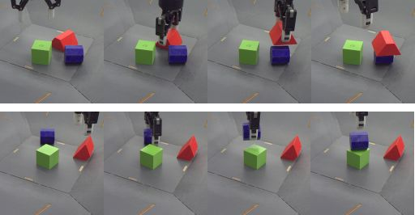
실제 로봇에서 미세 조정된 Gato를 평가한 결과 최종 60%의 성공률을 달성한 반면, 파란색-위-초록색 데이터로 처음부터 학습된 BC 베이스라인은 단 0.5%의 성공률(1/200 에피소드)만을 달성했다. 정성적으로 볼 때, BC 베이스라인은 일관되게 파란색 객체를 향해 이동하고 가끔 이를 집어 올려 초록색 객체 위에 올려놓았으나, 완전하고 안정적인 쌓기는 거의 달성하지 못했다.
5.4 로봇 공학: 기술 숙달(Skill Mastery)
섹션 4.2에서 논의된 기술 일반화 과제와 유사하게, 기술 숙달(Skill Mastery) 과제는 다양한 형태의 블록을 쌓도록 로봇 팔을 학습시키는 것으로 구성된다. 그러나 기술 숙달에서는 에이전트가 평가에 사용되는 객체 형태가 포함된 데이터로 학습하는 것을 허용한다. 즉, 기술 일반화의 test 세트가 기술 숙달의 training 세트의 일부가 된다. 따라서 이 과제는 분포 내(in-distribution) 태스크(학습 시연에서 보지 못한 초기 조건이 있을 수 있음)에서 Gato의 성능을 측정하는 역할을 한다. 우리의 기술 숙달 결과는 미세 조정 없이 부록 H에 기술된 이전 버전의 Gato 아키텍처를 사용한다.
| Agent | Group 1 | Group 2 | Group 3 | Group 4 | Group 5 | Average |
| Gato | 58% | 57.6% | 78.5% | 89 % | 95.1% | 75.6% |
| BC-IMP (Lee et al., 2021) | 75.6% | 60.8% | 70.8% | 87.8% | 78.3% | 74.6% |
표 3은 Gato와 기존 BC-IMP 베이스라인에 대해 그룹별 성공 백분율과 객체 그룹 간 평균 성공률을 비교한다. Gato는 단 하나의 학습 삼중쌍을 제외한 모든 삼중쌍에서 BC-IMP의 성능을 능가하거나 이에 긴밀하게 부합한다.
5.5 특정 단일 도메인 다중 작업 전문 에이전트 (Specialist single-domain multi-task agents)
이 섹션에서는 제너럴리스트(generalist)가 아닌 두 개의 스페셜리스트(specialist) 에이전트로부터 얻은 결과를 보여준다. 두 에이전트 모두 단일 도메인의 데이터로만 학습되었으며, 작업별 미세 조정(fine-tuning) 없이 각 학습 작업에 대해 500회씩 실행(rollout)되었다.
메타월드 (Meta-World)
첫 번째 에이전트는 섹션 5.1에서 소개된 가장 작은 아키텍처, 즉 79M 매개변수를 사용하며, 50개의 모든 Meta-World 작업에 대해 학습된다. Gato는 MuJoCo 물리 엔진의 상태와 무제한의 작업 시드(seed)에 접근할 수 있는 반면, 여기서 제시하는 에이전트는 추가적인 기능이나 작업에 접근할 수 없으며 (Yu et al., 2020)에서와 같이 표준 API를 사용한다. 이 실험은 본 논문에서 제안하는 아키텍처가 소규모에서도 최첨단(state-of-the-art) 에이전트를 얻는 데 사용될 수 있음을 보여주기 위함이다. 학습 과정은 MT-50 작업 각각에 대해 단일 작업 MPO (Abdolmaleki et al., 2018) 전문가를 개별적으로 학습시키고, 학습 중에 생성된 궤적(trajectory)을 기록하는 것이었다. 이후 이 경험들을 단일 에이전트로 결합하거나 증류(distill)하여, 50개 모든 작업에 대해 평균 96.6%의 성공률을 달성한다. 우리가 알고 있는 한, 이 에이전트는 이 벤치마크에 대해 동시에(다중 작업으로) 거의 100%에 가까운 평균 성공률을 달성한 최초의 에이전트이다. 작업의 전체 목록과 우리 에이전트의 해당 성공률은 부록 자료(섹션 K)의 표 7을 참조하라.
ALE 아타리 (ALE Atari)
우리는 또한 51개의 모든 ALE Atari 작업에 대해 스페셜리스트 에이전트를 학습시켰다. Atari 도메인은 Meta-World보다 훨씬 더 도전적이기 때문에, 1.18B 매개변수를 가진 Gato 아키텍처를 사용했다.
그 결과 에이전트는 44개 게임에서 평균적인 인간보다 더 나은 성능을 보여준다(평가 및 점수 산정에 대한 자세한 내용은 섹션 4.1 참조). 다른 7개 게임의 학습 데이터를 생성하는 데 사용된 온라인 전문가의 성능 역시 평균적인 인간 이하였다는 점에 주목하고자 한다. 따라서 스페셜리스트 Atari 에이전트는 데이터에 초인적(super-human) 에피소드가 포함된 모든 게임에서 인간보다 뛰어난 성능을 달성했다.
스페셜리스트 Atari 에이전트는 23개 게임에서 초인적 성능을 달성한 우리의 제너럴리스트 에이전트 Gato보다 뛰어난 성능을 보인다. 이는 Gato의 규모를 확장하면 훨씬 더 나은 성능을 얻을 수 있음을 시사한다. 그러나 우리는 실제 로봇에서 실시간으로 실행할 수 있도록 Gato의 크기를 의도적으로 제한했다.
5.6 어텐션 분석 (Attention Analysis)
다양한 작업에 걸쳐 Gato가 이미지의 서로 다른 영역에 어떻게 주목(attention)하는지 정성적으로 파악하기 위해, 이미지 관측값에 대한 트랜스포머 어텐션 가중치를 시각화했다(그림 12 참조). 더 많은 작업에 대한 자세한 내용과 시각화 자료는 부록 J에서 확인할 수 있다. 이러한 시각화는 어텐션이 작업 관련 객체 및 영역을 명확하게 추적하고 있음을 보여준다.
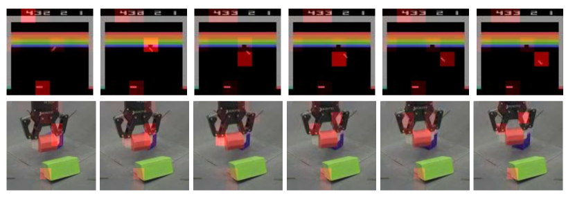
5.7 임베딩 시각화 (Embedding Visualization)
Gato가 작업별로 정보를 어떻게 다르게 인코딩하는지 이해하기 위해, 작업별 임베딩을 시각화했다.
우리는 11개의 작업을 분석했다. 각 작업에 대해 무작위로 100개의 에피소드를 샘플링하고 각각을 토큰화한다. 그런 다음 각 에피소드에서 128개 토큰의 하위 시퀀스를 가져와 임베딩을 계산하고(트랜스포머 레이어 전체 깊이의 절반인 레이어 12에서), 시퀀스에 대해 평균을 낸다. 모든 작업에 대한 평균 임베딩은 PCA의 입력으로 사용되어 차원을 50으로 축소한다. 그 후, T-SNE를 사용하여 최종 2D 임베딩을 얻는다.
그림 13은 2D로 플롯되고 작업별로 색상화된 최종 T-SNE 임베딩을 보여준다. 동일한 작업의 임베딩은 명확하게 함께 군집화(clustering)되어 있으며, 동일한 도메인 및 모달리티의 작업 군집들도 서로 가깝게 위치해 있다. 학습에 사용되지 않은(held-out) 작업(cartpole.swingup)조차도 올바르게 군집화되어 DM Control Suite Pixels의 다른 작업 옆에 위치한다.
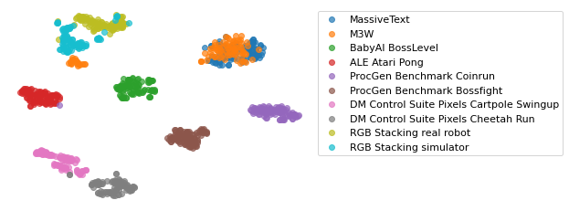
6 관련 연구 (Related Work)
Gato의 아키텍처와 가장 밀접하게 관련된 연구는 Decision Transformer (Chen et al., 2021b; Reid et al., 2022; Zheng et al., 2022; Furuta et al., 2021) 및 Trajectory Transformer (Janner et al., 2021)로, 이들은 다양한 제어 문제에 대해 매우 범용적인 LM(언어 모델) 유사 아키텍처의 유용성을 보여주었다. Gato 역시 제어를 위해 LM 유사 아키텍처를 사용하지만, 다중 모달리티(multi-modality), 다중 신체(multi-embodiment), 대규모 및 범용 배포를 지원하도록 선택된 설계상의 차이점이 있다. Pix2Seq (Chen et al., 2022) 또한 객체 탐지(object detection)를 위해 LM 기반 아키텍처를 사용한다. Perceiver IO (Jaegle et al., 2021)는 매우 긴 시퀀스에 특화된 트랜스포머 파생 아키텍처를 사용하여 모든 모달리티를 바이트 시퀀스로 모델링한다. 이와 유사한 아키텍처들은 향후 제너럴리스트 모델이 지원하는 모달리티의 범위를 확장하는 데 사용될 수 있다.
Gato는 범용 언어 모델의 한계를 밀어붙인 GPT-3 (Brown et al., 2020) 및 Gopher (Rae et al., 2021), 그리고 더 최근의 범용 시각 언어 모델인 Flamingo (Alayrac et al., 2022)와 같은 연구들에서 영감을 받았다. Chowdhery et al. (2022)은 수백 개의 텍스트 태스크를 위한 범용 퓨샷 학습기(few-shot learner)로서 540B 매개변수의 Pathways Language Model (PaLM)을 명시적으로 개발했다. 향후 연구에서는 이러한 텍스트 능력을 다양한 환경과 물리적 형태(embodiment)를 가지고 현실 세계에서 실시간으로 작동할 수 있는 하나의 완전한 범용 에이전트로 통합하는 방법을 고려해야 한다.
Gato는 또한 다중 물리적 형태(multi-embodiment) 연속 제어에 관한 최근 연구들에서도 영감을 얻었다. Huang et al. (2020)은 메시지 전달 그래프 네트워크(message passing graph networks)를 사용하여 시뮬레이션된 다양한 2D 보행기 변형들을 위한 단일 운동 제어기(locomotor controller)를 구축했다. Kurin et al. (2020)은 형태학적 귀납 편향(morphological inductive biases)을 인코딩하지 않음에도 불구하고, 호환되지 않는(즉, 물리적 형태가 다른) 제어에서 트랜스포머가 그래프 기반 접근 방식보다 우수한 성능을 보일 수 있음을 보여주었다. Devin et al. (2017)는 시뮬레이션된 2D 조작 환경에서 다중 태스크 및 다중 로봇 전이를 위한 모듈식 정책을 학습한다. Chen et al. (2018)은 로봇 하드웨어의 벡터 표현을 조건으로 하는 범용 정책을 훈련하여, 시뮬레이션된 미학습(held-out) 로봇 팔과 실제 Sawyer 로봇 팔 모두로의 성공적인 전이를 보여주었다.
Gato와 마찬가지로 매우 이질적인 도메인과 모달리티에 걸쳐 작동하는 다양한 초기 범용 모델들이 개발되어 왔다. NPI (Reed & De Freitas, 2016)는 배열 정렬 및 두 수의 덧셈과 같은 다양한 프로그램을 실행하도록 단일 LSTM (Hochreiter & Schmidhuber, 1997)을 훈련하여, 네트워크가 훈련 중에 본 것보다 더 큰 문제 인스턴스로 일반화할 수 있도록 했다. Kaiser et al. (2017)는 분류, 이미지 캡셔닝, 번역을 포함한 8가지 고유한 음성, 이미지 및 텍스트 처리 태스크에 대해 공동으로 훈련하는 MultiModel을 개발했다. 텍스트, 이미지, 오디오 및 범주형 데이터를 처리하기 위해 모달리티별 인코더가 사용되었으며, 나머지 네트워크 매개변수는 태스크 전반에 걸쳐 공유된다. Schmidhuber (2018)은 점점 더 범용적인 문제 해결사를 점진적으로 훈련하는 방법을 설명하며 “모든 것을 위한 하나의 거대한 네트워크(one big net for everything)”를 제안했다. Keskar et al. (2019)는 언어 도메인, 서브도메인, 엔티티, 엔티티 간의 관계, 날짜 및 태스크별 행동에 따라 지시를 내릴 수 있는 제어 가능한 다중 태스크 언어 모델을 제안했다.
이 논의에서는 하나의 단일 다중 태스크 네트워크 아키텍처와 모든 태스크에 대해 동일한 가중치를 갖는 하나의 단일 신경망을 구분하는 것이 중요하다. 몇몇 대중적인 강화학습(RL) 에이전트들은 Atari57 및 DMLab (Espeholt et al., 2018; Song et al., 2020; Hessel et al., 2019)과 같은 단일 도메인 내에서 우수한 다중 태스크 RL 결과를 달성한다. 그러나 태스크 전반에 걸쳐 동일한 정책 아키텍처와 하이퍼파라미터를 사용하되, 각 태스크마다 정책 매개변수를 다르게 하는 것이 훨씬 더 일반적이다 (Mnih et al., 2015; Tassa et al., 2018). 이는 보드 게임에 적용된 최첨단 RL 방법들 (Schrittwieser et al., 2020)에서도 마찬가지이다. 더욱이, 이러한 선택은 오프라인 RL 벤치마크 (Gulcehre et al., 2020; Fu et al., 2020)와 의사결정 트랜스포머(decision transformers) (Chen et al., 2021b; Reid et al., 2022; Zheng et al., 2022) 및 Janner et al. (2021)의 Trajectory Transformer를 포함하여 제어를 위한 대규모 시퀀스 신경망에 관한 최근 연구들에서도 채택되었다. 이와 대조적으로, 본 연구에서 우리는 다양한 태스크 세트에 걸쳐 동일한 가중치를 갖는 단일 네트워크를 학습한다.
최근의 포지션 논문들은 고도로 범용적인 모델을 옹호하고 있으며, 특히 모든 것을 위한 하나의 거대한 네트워크를 제안한 Schmidhuber (2018)과 파운데이션 모델(foundation models)에 관한 Bommasani et al. (2021)이 대표적이다. 그러나 우리가 아는 한, 현대적인 트랜스포머 네트워크를 대규모로 사용하여 수백 개의 시각, 언어 및 제어 태스크에 대해 훈련된 단일 범용 모델은 아직 보고된 바 없다.
“단일 뇌(Single-brain)” 스타일의 모델은 신경과학과 흥미로운 연결고리를 가지고 있다. Mountcastle (1978)은 “신피질 모듈의 처리 기능은 모든 신피질 영역에서 질적으로 유사하다. 요약하자면, 운동 피질이라고 해서 본질적으로 운동에 관한 것만 있는 것은 아니며, 감각 피질이라고 해서 감각에 관한 것만 있는 것도 아니다”라는 유명한 말을 남겼다. Mountcastle은 대뇌 피질의 뉴런 기둥(columns of neurons)이 시각, 청각 또는 운동 제어 중 어느 것과 연관되어 있든 유사하게 행동한다는 것을 발견했다. 이는 우리가 지능을 구축하기 위해 단 하나의 알고리즘이나 모델만 필요할 수 있다는 주장의 근거가 되었다 (Hawkins & Blakeslee, 2004).
감각 대체(Sensory substitution)는 단일 모델에 대한 또 다른 논거를 제공한다 (Bach-y Rita & Kercel, 2003). 예를 들어, 시각 장애인을 위한 촉각 시각 보조 장치를 다음과 같이 제작할 수 있다. 카메라에 포착된 신호를 혀 위의 전극 배열을 통해 뇌로 보낼 수 있다. 시각 피질은 이러한 촉각 신호를 처리하고 해석하는 방법을 학습하여, 그 사람에게 일종의 “시각”을 부여한다. 이는 입력 신호의 유형에 관계없이 동일한 네트워크가 이를 유용한 효과로 처리할 수 있음을 시사한다.
우리의 연구는 깊은 자기회귀 모델(deep autoregressive models)에 기반을 두고 있으며, 이는 오랜 역사를 가지고 있으며 텍스트, 이미지, 비디오 및 오디오의 생성 모델에서 찾아볼 수 있다. 자기회귀 생성과 트랜스포머 (Vaswani et al., 2017; Devlin et al., 2018)의 결합은 언어 모델링 (Brown et al., 2020; Rae et al., 2021), 단백질 구조 예측(protein folding) (Jumper et al., 2021), 시각-언어 모델 (Tsimpoukelli et al., 2021; Wang et al., 2021; Alayrac et al., 2022), 코드 생성 (Chen et al., 2021c; Li et al., 2022b), 검색 기능이 있는 대화 시스템 (Nakano et al., 2021; Thoppilan et al., 2022), 음성 인식 (Pratap et al., 2020), 신경망 기계 번역 (Johnson et al., 2019) 등 (Bommasani et al., 2021)에서 엄청난 영향력을 발휘해 왔다. 최근 연구자들은 언어 모델을 통한 태스크 분해(task decomposition) 및 그라운딩(grounding)을 탐구해 왔다 (Huang et al., 2022; Ahn et al., 2022).
Li et al. (2022a)은 시퀀스 토크나이저, 사전 훈련된 언어 모델 및 태스크별 피드포워드 네트워크로 구성된 제어 아키텍처를 구축한다. 그들은 이를 VirtualHome 및 BabyAI 태스크에 적용하고, 사전 훈련된 언어 모델을 포함하는 것이 새로운 태스크로의 일반화 성능을 향상시킨다는 것을 발견했다. 유사하게, Parisi et al. (2022)은 자기지도 학습(self-supervised learning), 특히 크롭 분할(crop segmentations) 및 모멘텀 대조(momentum contrast) (He et al., 2020)로 사전 훈련된 시각 모델이 제어 정책에 효과적으로 통합될 수 있음을 보여준다.
앞서 언급했듯이, Atari에서의 전이(transfer)는 까다롭다. Rusu et al. (2016)은 무작위로 선택된 Atari 게임들 간의 전이를 연구했다. 그들은 서로 다른 게임들 간의 시각적 요소, 제어 방식 및 전략의 현저한 차이로 인해 Atari가 전이하기 어려운 도메인임을 발견했다. Atari와 같은 비디오 게임에 행동 복제(behaviour cloning)를 적용할 때 발생하는 추가적인 어려움들은 Kanervisto et al. (2020)에 의해 논의된다.
최근 데이터 기반 로봇 공학 (Cabi et al., 2019; Chen et al., 2021a)에 대한 관심이 뜨겁다. 그러나 Bommasani et al. (2021)은 로봇 공학에서 “핵심 걸림돌은 적절한 데이터를 수집하는 것이다. 언어 및 시각 데이터와 달리, 로봇 데이터는 풍부하지도 않고 충분히 다양한 물리적 형태, 태스크 및 환경을 대표하지도 못한다”고 지적한다. 게다가 로봇 공학 실험실에서 하드웨어를 업데이트할 때마다 새로운 데이터를 수집하고 재훈련해야 한다. 우리는 이것이 바로 새로운 물리적 형태에 적응하고 적은 데이터로 새로운 태스크를 학습할 수 있는 범용 에이전트가 필요한 이유라고 주장한다.
자기회귀 모델을 사용하여 행동을 생성하는 것은 교란 변수(confounding variables)가 존재할 때 인과적 “자기 기만(self-delusion)” 편향으로 이어질 수 있다 (Ortega et al., 2021). 예를 들어, 여러 태스크가 유사한 관측 및 행동 사양을 공유할 때 행동을 샘플링하면 모델이 잘못된 태스크를 해결하도록 조건화될 수 있다. 섹션 2에서 설명한 바와 같이, 우리는 모호한 태스크에서 프롬프트 엔지니어링을 사용하여 성공적인 시연(demonstration)을 모델에 조건으로 제공한다. 이는 교란 변수를 차단하여 자기 기만을 줄여준다. 본 연구에서 탐구하지 않은 또 다른 해결책은 즉각적인 전문가 피드백을 사용하여 모델을 온라인으로 훈련하는 반사실적 교수법(counterfactual teaching)을 사용하는 것이다. 이는 향후 연구 과제로 남겨둔다.
7 더 넓은 영향력(Broader Impact)
범용 에이전트는 아직 신흥 연구 분야에 불과하지만, 사회에 미칠 잠재적 영향력을 고려할 때 그 위험과 이점에 대한 철저한 학제간 분석이 필요하다. 투명성을 위해, 우리는 부록 A의 모델 카드에 Gato의 의도된 사용 사례를 기록해 두었다. 그러나 범용 에이전트의 위해성을 완화하기 위한 도구는 상대적으로 미비한 상태이며, 이러한 에이전트가 배포되기 전에 추가적인 연구가 필요하다.
우리의 범용 에이전트는 시각-언어 모델로 작동할 수 있으므로, (Weidinger et al., 2021; Bommasani et al., 2021; Rae et al., 2021; Alayrac et al., 2022)에서 논의된 것과 유사한 우려 사항들을 그대로 물려받는다. 또한, 범용 에이전트는 물리적 세계에서 행동을 취할 수 있으므로, 새로운 완화 전략이 필요할 수 있는 새로운 과제를 제기한다. 예를 들어, 물리적 형태를 가짐으로써 사용자가 에이전트를 의인화하게 되어 시스템 오작동 시 잘못된 신뢰를 갖게 되거나, 악의적인 행위자에게 악용될 수 있다. 아울러, 교차 도메인 지식 전이(cross-domain knowledge transfer)는 머신러닝 연구에서 종종 목표가 되지만, 특정 행동(예: 아케이드 게임에서의 격투)이 잘못된 맥락으로 전이될 경우 예상치 못하고 원치 않는 결과를 초래할 수 있다. 지식 전이의 윤리 및 안전성에 대한 고려는 범용 시스템이 발전함에 따라 상당한 수준의 새로운 연구를 필요로 할 수 있다.
다양한 물리적 형태에서 작동하는 범용 에이전트를 고려할 때 기술적 AGI 안전성 (Bostrom, 2017) 또한 더 까다로워질 수 있다. 이러한 이유로 선호도 학습(preference learning), 불확실성 모델링 및 가치 정렬(value alignment) (Russell, 2019)은 인간 친화적인 범용 에이전트를 설계하는 데 특히 중요하다. 언어를 위한 가치 정렬 접근 방식 (Ouyang et al., 2022; Kenton et al., 2021) 중 일부를 범용 에이전트로 확장하는 것이 가능할 수 있다. 그러나 가치 정렬을 위한 기술적 솔루션이 개발되더라도, 예기치 못한 상황이나 제한된 감독 (Amodei et al., 2016)으로 인해 의도가 선한 설계자가 개입하더라도 범용 시스템은 여전히 사회에 부정적인 영향을 미칠 수 있다. 이러한 한계는 여러 학문 분야와 관점을 통합하는 신중한 설계 및 배포 프로세스의 필요성을 강조한다.
모델이 정보를 처리하는 방식과 창발적 능력(emergent capabilities)을 이해하려면 상당한 실험이 필요하다. 외부 검색(External retrieval) (Borgeaud et al., 2021; Menick et al., 2022; Nakano et al., 2021; Thoppilan et al., 2022)은 해석 가능성과 성능을 모두 향상시키는 것으로 나타났으므로, 향후 범용 에이전트 설계에서 고려되어야 한다.
비록 아직 개념 증명(proof-of-concept) 단계에 머물러 있지만, 범용 모델의 최근 발전은 안전성 연구자, 윤리학자, 그리고 가장 중요하게는 대중이 그 위험과 이점을 고민해야 함을 시사한다. 우리는 현재 Gato를 어떤 사용자에게도 배포하지 않고 있으므로, 즉각적인 사회적 영향은 예상하지 않는다. 그러나 잠재적인 영향력을 고려할 때, 범용 모델은 신중하게 개발되어야 하며 인류의 건강과 활력을 증진하는 방식으로 배포되어야 한다.
8 한계점 및 향후 연구
8.1 RL 데이터 수집
Gato는 모방 학습(imitation learning)에서 파생되었기 때문에 데이터 구동형(data-driven) 접근 방식이다. 자연어나 이미지 데이터셋은 웹에서 비교적 쉽게 얻을 수 있는 반면, 제어 작업을 위한 웹 규모의 데이터셋은 현재 확보하기 어렵다. 이는 특히 Gato를 더 많은 수의 매개변수로 확장할 때 처음에는 문제가 되는 것처럼 보일 수 있다.
그렇기는 하지만, 이 문제에 대해서는 이미 광범위한 조사가 이루어졌다. 오프라인 강화학습(Offline RL)은 기존의 제어 데이터셋을 활용하는 것을 목표로 하며, 그 인기가 높아짐에 따라 이미 더 다양하고 대규모인 데이터셋을 사용할 수 있게 되었다. 더 풍부한 환경과 시뮬레이션(예: 메타버스)이 구축되고 있으며, 이미 배포된 수천 개의 온라인 게임(예: 스타크래프트 2 게임의 대규모 데이터셋이 존재함)에서 점점 더 많은 사용자가 이들과 상호작용하고 있다. 실생활 데이터 또한 머신러닝 연구 목적으로 이미 저장되어 왔는데, 예를 들어 자율주행차 학습을 위한 데이터는 인간 운전자의 데이터 기록으로부터 획득된다. 마지막으로, Gato는 관측과 이에 대응하는 행동으로 구성된 데이터를 사용하지만, 에이전트를 향상시키기 위해 대규모 관측 전용(observation-only) 데이터를 사용할 가능성은 이미 연구된 바 있다 (Baker et al., 2022). 유튜브나 트위치와 같은 온라인 비디오 공유 및 스트리밍 플랫폼 덕분에, 관측 전용 데이터셋은 자연어 데이터셋보다 수집하기가 크게 어렵지 않으며, 이는 Gato가 웹 데이터로부터 학습하도록 확장하는 향후 연구 방향에 동기를 부여한다.
이전 문단은 RL 에이전트로부터의 데이터 수집 단점을 완화하는 데 초점을 맞추고 있지만, 이 접근 방식이 웹 데이터를 스크래핑하는 것에 비해 다른 절충안(tradeoff)을 제시하며 일부 상황에서는 실제로 더 실용적일 수 있다는 점에 주목하는 것이 중요하다. 시뮬레이션이 설정되고 SOTA에 가까운 에이전트가 학습되면, 이를 사용하여 방대한 양의 고품질 데이터를 생성할 수 있다. 이는 품질이 낮기로 악명 높은 웹 데이터의 품질과 대조적이다.
요약하자면, 우리는 적절한 데이터를 확보하는 것 자체가 또 다른 연구 과제이며, 이는 추진력과 중요성이 커지고 있는 활발한 연구 분야라고 믿는다.
8.2 프롬프트 및 짧은 컨텍스트
Gato는 전문가 시연(expert demonstration)을 프롬프트로 제공받으며, 이는 에이전트가 주어진 작업에 해당하는 행동을 출력하도록 돕는다. 이는 에이전트가 사용할 수 있는 작업 식별자가 달리 없기 때문에 특히 유용하다(이는 많은 다중 작업 RL 설정과 대조적이다). Gato는 프롬프트의 관측과 행동으로부터 관련 작업을 추론한다.
그러나 우리 에이전트의 컨텍스트 길이는 1024 토큰으로 제한되어 있어, 에이전트가 결과적으로 전체 환경 타임스텝 중 단 몇 가지만 주목하게 되는 경우가 있다. 이는 특히 이미지 관측을 사용하는 환경에서 그러한데, 해상도에 따라 각 관측이 각각 100개 이상의 토큰을 생성할 수 있기 때문이다. 따라서 특정 환경의 경우 시연 에피소드의 짧은 조각만 트랜스포머 메모리에 들어간다.
이러한 제한된 프롬프트 컨텍스트로 인해, 다양한 프롬프트 구조를 사용한 예비 실험은 매우 유사한 성능을 보였다. 마찬가지로, 새로운 환경에서 프롬프트 기반 인컨텍스트 학습(in-context learning)을 사용하여 모델을 조기 평가했을 때 동일한 설정에서 프롬프트가 없는 평가와 비교하여 유의미한 성능 향상을 보이지 않았다.
따라서 컨텍스트 길이는 주로 셀프 어텐션(self-attention)의 이차식 스케일링(quadratic scaling)으로 인해 발생하는 우리 아키텍처의 현재 한계점이다. 최근 제안된 많은 아키텍처는 더 높은 효율성으로 더 긴 컨텍스트를 가능하게 하며, 이러한 혁신은 잠재적으로 우리 에이전트의 성능을 향상시킬 수 있다. 우리는 향후 연구에서 이러한 아키텍처를 탐구하고자 한다.
9 결론
트랜스포머 시퀀스 모델은 실제 텍스트, 비전 및 로보틱스 작업을 포함하여 다중 작업 및 다중 신체(multi-embodiment) 정책으로서 효과적이다. 이들은 또한 소수샷 분포 외(few-shot out-of-distribution) 작업 학습에서도 가능성을 보여준다. 향후에는 이러한 모델을 처음부터 학습시키는 대신, 새로운 행동을 학습하기 위해 프롬프팅이나 미세 조정(fine-tuning)을 통한 기본 출발점으로 사용할 수 있을 것이다.
스케일링 법칙(scaling law) 트렌드를 고려할 때, 대화를 포함한 모든 작업에서의 성능은 매개변수, 데이터 및 컴퓨팅 규모가 확장됨에 따라 증가할 것이다. 더 나은 하드웨어와 네트워크 아키텍처는 실시간 로봇 제어 능력을 유지하면서 더 큰 모델을 학습할 수 있게 할 것이다. 이와 동일한 기본 접근 방식을 확장하고 반복함으로써, 우리는 유용한 범용 에이전트를 구축할 수 있다.
사사
데이터 저장 인프라를 도와준 Dan Horgan, Manuel Kroiss, Mantas Pajarskas, Thibault Sottiaux; 동시 평가를 도와준 Jean-Baptiste Lespiau, Fan Yang; 모델 설계에 대해 자문해 준 Joel Veness; 프로젝트에 영감을 주고 피드백을 촉진하는 데 도움을 준 Koray Kavukcuoglu; 연속 제어를 위한 에이전트 설계 및 작업 선택에 대해 자문해 준 Tom Erez; 초기 프로토타입 코딩을 도와준 Igor Babuschkin; 트랜스포머 언어 모델 코드베이스에 대해 자문해 준 Jack Rae; 로봇 인프라를 구축하고 실제 로보틱스 실험에 대해 자문해 준 Thomas Lampe; 윤리 및 안전 고려 사항에 대해 의견을 준 Boxi Wu; 인과관계 및 자기 기만 편향(self-delusion biases)에 대해 자문해 준 Pedro A. Ortega에게 감사를 표한다.
저자 기여
Scott Reed는 프로젝트 개념을 개발하고, 초기 프로토타입을 작성했으며, 프로젝트 전반을 이끌었다.
Konrad Żołna는 비전 및 텍스트 아키텍처 개발을 주도하고, 토큰화 및 프롬프팅을 위한 인프라를 구축했으며, 전반적인 에이전트 개발 및 평가에 크게 기여했다.
Emilio Parisotto는 트랜스포머 아키텍처 최적화 작업을 주도하고, 가장 많은 수의 실험을 수행했으며, 스케일링 법칙 특성과 분포 내(in-distribution) 에이전트 성능을 분석했다.
Sergio Gómez Colmenarejo는 기술 리드로서 동시에 수백 개의 작업을 지원하는 확장 가능한 데이터 로더 및 평가기 생성을 담당했으며, Gato와의 초기 로봇 통합을 담당했다.
Alexander Novikov는 초기 프로토타입용 샘플러를 포함한 모델을 개발하고, 로보틱스에 초점을 맞춘 실험을 수행했으며, 시각화를 생성했다.
Gabriel Barth-Maron은 Gato에게 Atari 및 기타 도메인에서 SoTA 수준의 에이전트 경험을 제공하기 위해 확장 가능한 저장 인프라를 구축했다.
Mai Giménez는 대규모 에이전트 데이터 수집을 수행하고, 실질적인 데이터 로딩 인프라를 구축했으며, 대규모 시각-언어 데이터셋을 Gato 학습에 통합했다.
Yury Sulsky는 맞춤형 분산 학습 시퀀스 로더를 포함하여 Gato 코드베이스에 광범위하게 기여했으며, 분포 외 일반화에 대한 벤치마크 개발과 경쟁력 있는 베이스라인 에이전트 학습을 주도했다.
Jackie Kay는 물리적 로보틱스 인프라를 지원하고, Gato의 일반화 특성을 분석하기 위해 수많은 평가와 실험을 수행했으며, 더 광범위한 윤리적 영향에 대해 고찰했다.
Jost Tobias Springenberg는 Gato의 물리 로봇 배포를 지도하고, 블록 쌓기를 위한 강력한 기존 베이스라인을 제공했으며, 모델 개발 및 실험 설계에 대해 자문했다.
Tom Eccles는 Gato 대화 및 이미지 캡셔닝 데모를 개발하여 사용자가 개발 중인 에이전트의 비전 및 언어 능력을 쉽게 조사할 수 있도록 했다.
Jake Bruce는 에이전트 설계뿐만 아니라 무작위 물리 및 형태 변화가 있는 제어 데이터셋 및 환경에 기여했다.
Ali Razavi는 비전 아키텍처 탐색을 도왔다.
Ashley Edwards는 대안적인 네트워크 아키텍처 및 학습 목표 탐색 외에도 Atari에서 작동하는 Gato의 첫 번째 프로토타입에 기여했다.
Nicolas Heess는 특히 연속 제어 애플리케이션을 위한 에이전트 설계, 실험 설계 및 작업 선택에 대해 자문했다.
Yutian Chen은 모델 설계 및 실험에 대해 자문하고 정기 회의에서 피드백을 제공했다.
Raia Hadsell은 로보틱스 노력이 설계 및 계획에 대해 자문했다.
Oriol Vinyals는 프로젝트의 모든 측면, 특히 모델 아키텍처, 학습 전략 및 벤치마크 설계에 대해 자문했다.
Mahyar Bordbar는 주요 목표 도출, 진행 상황 추적, 발표 및 피드백 촉진, 자원 계획 조율을 담당한 주요 프로젝트 매니저였다.
Nando de Freitas는 프로젝트의 시작부터 전 과정을 감독했다.
References
- Abdolmaleki et al. (2018) Abbas Abdolmaleki, Jost Tobias Springenberg, Yuval Tassa, Remi Munos, Nicolas Heess, and Martin Riedmiller. Maximum a posteriori policy optimisation. Preprint arXiv:1806.06920, 2018.
- Abnar & Zuidema (2020) Samira Abnar and Willem Zuidema. Quantifying attention flow in transformers. Preprint arXiv:2005.00928, 2020.
- Ahn et al. (2022) Michael Ahn, Anthony Brohan, Noah Brown, Yevgen Chebotar, Omar Cortes, Byron David, Chelsea Finn, Keerthana Gopalakrishnan, Karol Hausman, Alex Herzog, et al. Do as i can, not as i say: Grounding language in robotic affordances. Preprint arXiv:2204.01691, 2022.
- Alayrac et al. (2022) Jean-Baptiste Alayrac, Jeff Donahue, Pauline Luc, Antoine Miech, Iain Barr, Yana Hasson, Karel Lenc, Arthur Mensch, Katie Millican, Malcolm Reynolds, Roman Ring, Eliza Rutherford, Serkan Cabi, Tengda Han, Zhitao Gong, Sina Samangooei, Marianne Monteiro, Jacob Menick, Sebastian Borgeaud, Andy Brock, Aida Nematzadeh, Sahand Sharifzadeh, Mikolaj Binkowski, Ricardo Barreira, Oriol Vinyals, Andrew Zisserman, and Karen Simonyan. Flamingo: a visual language model for few-shot learning. Preprint arXiv:2204.14198, 2022.
- Amodei et al. (2016) Dario Amodei, Chris Olah, Jacob Steinhardt, Paul F. Christiano, John Schulman, and Dan Mané. Concrete problems in AI safety. Preprint arXiv:1606.06565, 2016.
- Antol et al. (2015) Stanislaw Antol, Aishwarya Agrawal, Jiasen Lu, Margaret Mitchell, Dhruv Batra, C Lawrence Zitnick, and Devi Parikh. VQA: Visual question answering. In International Conference on Computer Vision, pp. 2425–2433, 2015.
- Ba et al. (2016) Jimmy Lei Ba, Jamie Ryan Kiros, and Geoffrey E Hinton. Layer normalization. Preprint arXiv:1607.06450, 2016.
- Bach-y Rita & Kercel (2003) Paul Bach-y Rita and Stephen W Kercel. Sensory substitution and the human-machine interface. Trends in cognitive sciences, 7(12):541–546, 2003.
- Baker et al. (2022) Bowen Baker, Ilge Akkaya, Peter Zhokhov, Joost Huizinga, Jie Tang, Adrien Ecoffet, Brandon Houghton, Raul Sampedro, and Jeff Clune. Video pretraining (vpt): Learning to act by watching unlabeled online videos. Preprint arXiv::2206.11795, 2022.
- Barth-Maron et al. (2018) Gabriel Barth-Maron, Matthew W Hoffman, David Budden, Will Dabney, Dan Horgan, Dhruva Tb, Alistair Muldal, Nicolas Heess, and Timothy Lillicrap. Distributed distributional deterministic policy gradients. Preprint arXiv:1804.08617, 2018.
- Beattie et al. (2016) Charles Beattie, Joel Z Leibo, Denis Teplyashin, Tom Ward, Marcus Wainwright, Heinrich Küttler, Andrew Lefrancq, Simon Green, Víctor Valdés, Amir Sadik, et al. DeepMind lab. Preprint arXiv:1612.03801, 2016.
- Bellemare et al. (2013) Marc G Bellemare, Yavar Naddaf, Joel Veness, and Michael Bowling. The arcade learning environment: An evaluation platform for general agents. Journal of Artificial Intelligence Research, 47:253–279, 2013.
- Bommasani et al. (2021) Rishi Bommasani, Drew A Hudson, Ehsan Adeli, Russ Altman, Simran Arora, Sydney von Arx, Michael S Bernstein, Jeannette Bohg, Antoine Bosselut, Emma Brunskill, et al. On the opportunities and risks of foundation models. Preprint arXiv:2108.07258, 2021.
- Borgeaud et al. (2021) Sebastian Borgeaud, Arthur Mensch, Jordan Hoffmann, Trevor Cai, Eliza Rutherford, Katie Millican, George van den Driessche, Jean-Baptiste Lespiau, Bogdan Damoc, Aidan Clark, et al. Improving language models by retrieving from trillions of tokens. Preprint arXiv:2112.04426, 2021.
- Bostrom (2017) Nick Bostrom. Superintelligence. Dunod, 2017.
- Brockman et al. (2016) Greg Brockman, Vicki Cheung, Ludwig Pettersson, Jonas Schneider, John Schulman, Jie Tang, and Wojciech Zaremba. Openai gym. Preprint arXiv:1606.01540, 2016.
- Brown et al. (2020) TB Brown, B Mann, N Ryder, M Subbiah, J Kaplan, P Dhariwal, A Neelakantan, P Shyam, G Sastry, A Askell, et al. Language models are few-shot learners. In Advances in Neural Information Processing Systems, pp. 1877–1901, 2020.
- Cabi et al. (2019) Serkan Cabi, Sergio Gómez Colmenarejo, Alexander Novikov, Ksenia Konyushkova, Scott Reed, Rae Jeong, Konrad Zolna, Yusuf Aytar, David Budden, Mel Vecerik, et al. Scaling data-driven robotics with reward sketching and batch reinforcement learning. Preprint arXiv:1909.12200, 2019.
- Chen et al. (2021a) Annie S Chen, Suraj Nair, and Chelsea Finn. Learning generalizable robotic reward functions from “in-the-wild" human videos. Preprint arXiv:2103.16817, 2021a.
- Chen et al. (2021b) Lili Chen, Kevin Lu, Aravind Rajeswaran, Kimin Lee, Aditya Grover, Misha Laskin, Pieter Abbeel, Aravind Srinivas, and Igor Mordatch. Decision transformer: Reinforcement learning via sequence modeling. Advances in Neural Information Processing Systems, 34, 2021b.
- Chen et al. (2021c) Mark Chen, Jerry Tworek, Heewoo Jun, Qiming Yuan, Henrique Ponde de Oliveira Pinto, Jared Kaplan, Harri Edwards, Yuri Burda, Nicholas Joseph, Greg Brockman, et al. Evaluating large language models trained on code. Preprint arXiv:2107.03374, 2021c.
- Chen et al. (2018) Tao Chen, Adithyavairavan Murali, and Abhinav Gupta. Hardware conditioned policies for multi-robot transfer learning. Advances in Neural Information Processing Systems, 31, 2018.
- Chen et al. (2022) Ting Chen, Saurabh Saxena, Lala Li, David J Fleet, and Geoffrey Hinton. Pix2seq: A language modeling framework for object detection. In ICLR, 2022.
- Chen et al. (2015) Xinlei Chen, Hao Fang, Tsung-Yi Lin, Ramakrishna Vedantam, Saurabh Gupta, Piotr Dollár, and C Lawrence Zitnick. Microsoft coco captions: Data collection and evaluation server. Preprint arXiv:1504.00325, 2015.
- Chevalier-Boisvert et al. (2018) Maxime Chevalier-Boisvert, Dzmitry Bahdanau, Salem Lahlou, Lucas Willems, Chitwan Saharia, Thien Huu Nguyen, and Yoshua Bengio. BabyAI: A platform to study the sample efficiency of grounded language learning. Preprint arXiv:1810.08272, 2018.
- Chowdhery et al. (2022) Aakanksha Chowdhery, Sharan Narang, Jacob Devlin, Maarten Bosma, Gaurav Mishra, Adam Roberts, Paul Barham, Hyung Won Chung, Charles Sutton, Sebastian Gehrmann, et al. PaLM: Scaling language modeling with pathways. Preprint arXiv:2204.02311, 2022.
- Cobbe et al. (2020) Karl Cobbe, Chris Hesse, Jacob Hilton, and John Schulman. Leveraging procedural generation to benchmark reinforcement learning. In International Conference on Machine Learning, pp. 2048–2056, 2020.
- Dai et al. (2019) Zihang Dai, Zhilin Yang, Yiming Yang, Jaime G Carbonell, Quoc Le, and Ruslan Salakhutdinov. Transformer-xl: Attentive language models beyond a fixed-length context. In Annual Meeting of the Association for Computational Linguistics, pp. 2978–2988, 2019.
- Devin et al. (2017) Coline Devin, Abhishek Gupta, Trevor Darrell, Pieter Abbeel, and Sergey Levine. Learning modular neural network policies for multi-task and multi-robot transfer. In IEEE International Conference on Robotics & Automation, pp. 2169–2176, 2017.
- Devlin et al. (2018) Jacob Devlin, Ming-Wei Chang, Kenton Lee, and Kristina Toutanova. BERT: Pre-training of deep bidirectional transformers for language understanding. Preprint arXiv:1810.04805, 2018.
- Dosovitskiy et al. (2020) Alexey Dosovitskiy, Lucas Beyer, Alexander Kolesnikov, Dirk Weissenborn, Xiaohua Zhai, Thomas Unterthiner, Mostafa Dehghani, Matthias Minderer, Georg Heigold, Sylvain Gelly, et al. An image is worth 16x16 words: Transformers for image recognition at scale. Preprint arXiv:2010.11929, 2020.
- Espeholt et al. (2018) Lasse Espeholt, Hubert Soyer, Remi Munos, Karen Simonyan, Vlad Mnih, Tom Ward, Yotam Doron, Vlad Firoiu, Tim Harley, Iain Dunning, et al. Impala: Scalable distributed deep-RL with importance weighted actor-learner architectures. In International Conference on Machine Learning, pp. 1407–1416, 2018.
- Fu et al. (2020) Justin Fu, Aviral Kumar, Ofir Nachum, George Tucker, and Sergey Levine. D4RL: Datasets for deep data-driven reinforcement learning. Preprint arXiv:2004.07219, 2020.
- Furuta et al. (2021) Hiroki Furuta, Yutaka Matsuo, and Shixiang Shane Gu. Generalized decision transformer for offline hindsight information matching. Preprint arXiv:2111.10364, 2021.
- Gulcehre et al. (2020) Caglar Gulcehre, Ziyu Wang, Alexander Novikov, Thomas Paine, Sergio Gómez, Konrad Zolna, Rishabh Agarwal, Josh S Merel, Daniel J Mankowitz, Cosmin Paduraru, et al. RL unplugged: A suite of benchmarks for offline reinforcement learning. Advances in Neural Information Processing Systems, 33:7248–7259, 2020.
- Hawkins & Blakeslee (2004) Jeff Hawkins and Sandra Blakeslee. On intelligence. Macmillan, 2004.
- He et al. (2016a) Kaiming He, Xiangyu Zhang, Shaoqing Ren, and Jian Sun. Deep residual learning for image recognition. In IEEE Computer Vision and Pattern Recognition, pp. 770–778, 2016a.
- He et al. (2016b) Kaiming He, Xiangyu Zhang, Shaoqing Ren, and Jian Sun. Identity mappings in deep residual networks. In European Conference on Computer Vision, pp. 630–645, 2016b.
- He et al. (2020) Kaiming He, Haoqi Fan, Yuxin Wu, Saining Xie, and Ross Girshick. Momentum contrast for unsupervised visual representation learning. In IEEE Computer Vision and Pattern Recognition, pp. 9729–9738, 2020.
- Hendrycks & Gimpel (2016) Dan Hendrycks and Kevin Gimpel. Gaussian error linear units (GELUs). Preprint arXiv:1606.08415, 2016.
- Hessel et al. (2019) Matteo Hessel, Hubert Soyer, Lasse Espeholt, Wojciech Czarnecki, Simon Schmitt, and Hado van Hasselt. Multi-task deep reinforcement learning with popart. In AAAI, 2019.
- Hessel et al. (2021) Matteo Hessel, Ivo Danihelka, Fabio Viola, Arthur Guez, Simon Schmitt, Laurent Sifre, Theophane Weber, David Silver, and Hado van Hasselt. Muesli: Combining improvements in policy optimization. Preprint arXiv:2104.06159, 2021.
- Hochreiter & Schmidhuber (1997) Sepp Hochreiter and Jürgen Schmidhuber. Long short-term memory. Neural computation, 9(8):1735–1780, 1997.
- Hoffmann et al. (2022) Jordan Hoffmann, Sebastian Borgeaud, Arthur Mensch, Elena Buchatskaya, Trevor Cai, Eliza Rutherford, Diego de Las Casas, Lisa Anne Hendricks, Johannes Welbl, Aidan Clark, et al. Training compute-optimal large language models. Preprint arXiv:2203.15556, 2022.
- Huang et al. (2016) Gao Huang, Yu Sun, Zhuang Liu, Daniel Sedra, and Kilian Weinberger. Deep networks with stochastic depth. Preprint arXiv:1603.09382, 2016.
- Huang et al. (2020) Wenlong Huang, Igor Mordatch, and Deepak Pathak. One policy to control them all: Shared modular policies for agent-agnostic control. In International Conference on Machine Learning, pp. 4455–4464, 2020.
- Huang et al. (2022) Wenlong Huang, Pieter Abbeel, Deepak Pathak, and Igor Mordatch. Language models as zero-shot planners: Extracting actionable knowledge for embodied agents. Preprint arXiv:2201.07207, 2022.
- Hui et al. (2020) David Yu-Tung Hui, Maxime Chevalier-Boisvert, Dzmitry Bahdanau, and Yoshua Bengio. Babyai 1.1. Preprint arXiv:2007.12770, 2020.
- Jaegle et al. (2021) Andrew Jaegle, Sebastian Borgeaud, Jean-Baptiste Alayrac, Carl Doersch, Catalin Ionescu, David Ding, Skanda Koppula, Daniel Zoran, Andrew Brock, Evan Shelhamer, et al. Perceiver IO: A general architecture for structured inputs & outputs. Preprint arXiv:2107.14795, 2021.
- Janner et al. (2021) Michael Janner, Qiyang Li, and Sergey Levine. Offline reinforcement learning as one big sequence modeling problem. Advances in Neural Information Processing Systems, 34, 2021.
- Jia et al. (2021) Chao Jia, Yinfei Yang, Ye Xia, Yi-Ting Chen, Zarana Parekh, Hieu Pham, Quoc Le, Yun-Hsuan Sung, Zhen Li, and Tom Duerig. Scaling up visual and vision-language representation learning with noisy text supervision. In International Conference on Machine Learning, pp. 4904–4916, 2021.
- Johnson et al. (2019) Melvin Johnson, Orhan Firat, and Roee Aharoni. Massively multilingual neural machine translation. In Conference of the North American Chapter of the Association for Computational Linguistics: Human Language Technologies, pp. 3874–3884, 2019.
- Jumper et al. (2021) John Jumper, Richard Evans, Alexander Pritzel, Tim Green, Michael Figurnov, Olaf Ronneberger, Kathryn Tunyasuvunakool, Russ Bates, Augustin Žídek, Anna Potapenko, et al. Highly accurate protein structure prediction with AlphaFold. Nature, 596(7873):583–589, 2021.
- Kaiser et al. (2017) Lukasz Kaiser, Aidan N Gomez, Noam Shazeer, Ashish Vaswani, Niki Parmar, Llion Jones, and Jakob Uszkoreit. One model to learn them all. Preprint arXiv:1706.05137, 2017.
- Kanervisto et al. (2020) Anssi Kanervisto, Joonas Pussinen, and Ville Hautamäki. Benchmarking end-to-end behavioural cloning on video games. In IEEE conference on games (CoG), pp. 558–565, 2020.
- Kaplan et al. (2020) Jared Kaplan, Sam McCandlish, Tom Henighan, Tom B Brown, Benjamin Chess, Rewon Child, Scott Gray, Alec Radford, Jeffrey Wu, and Dario Amodei. Scaling laws for neural language models. Preprint arXiv:2001.08361, 2020.
- Kapturowski et al. (2018) Steven Kapturowski, Georg Ostrovski, John Quan, Remi Munos, and Will Dabney. Recurrent experience replay in distributed reinforcement learning. In International Conference on Learning Representations, 2018.
- Kenton et al. (2021) Zachary Kenton, Tom Everitt, Laura Weidinger, Iason Gabriel, Vladimir Mikulik, and Geoffrey Irving. Alignment of language agents. Preprint arXiv:2103.14659, 2021.
- Keskar et al. (2019) Nitish Shirish Keskar, Bryan McCann, Lav R Varshney, Caiming Xiong, and Richard Socher. CTRL: A conditional transformer language model for controllable generation. Preprint arXiv:1909.05858, 2019.
- Kingma & Ba (2014) Diederik P. Kingma and Jimmy Ba. Adam: A method for stochastic optimization. Preprint arXiv:1412.6980, 2014.
- Kudo & Richardson (2018) Taku Kudo and John Richardson. SentencePiece: A simple and language independent subword tokenizer and detokenizer for neural text processing. In Annual Meeting of the Association for Computational Linguistics, pp. 66–71, 2018.
- Kurin et al. (2020) Vitaly Kurin, Maximilian Igl, Tim Rocktäschel, Wendelin Boehmer, and Shimon Whiteson. My body is a cage: the role of morphology in graph-based incompatible control. Preprint arXiv:2010.01856, 2020.
- Lee et al. (2021) Alex X Lee, Coline Manon Devin, Yuxiang Zhou, Thomas Lampe, Konstantinos Bousmalis, Jost Tobias Springenberg, Arunkumar Byravan, Abbas Abdolmaleki, Nimrod Gileadi, David Khosid, et al. Beyond pick-and-place: Tackling robotic stacking of diverse shapes. In Conference on Robot Learning, 2021.
- Lee et al. (2022) Alex X Lee, Coline Manon Devin, Jost Tobias Springenberg, Yuxiang Zhou, Thomas Lampe, Abbas Abdolmaleki, and Konstantinos Bousmalis. How to spend your robot time: Bridging kickstarting and offline reinforcement learning for vision-based robotic manipulation. Preprint arXiv:2205.03353, 2022.
- Li et al. (2022a) Shuang Li, Xavier Puig, Chris Paxton, Yilun Du, Clinton Wang, Linxi Fan, Tao Chen, De-An Huang, Ekin Akyürek, Anima Anandkumar, Jacob Andreas, Igor Mordatch, Antonio Torralba, and Yuke Zhu. Pre-trained language models for interactive decision-making. Preprint arXiv:2202.01771, 2022a.
- Li et al. (2022b) Yujia Li, David Choi, Junyoung Chung, Nate Kushman, Julian Schrittwieser, Rémi Leblond, Tom Eccles, James Keeling, Felix Gimeno, Agustin Dal Lago, et al. Competition-level code generation with AlphaCode. Preprint arXiv:2203.07814, 2022b.
- Loshchilov & Hutter (2017) Ilya Loshchilov and Frank Hutter. Decoupled weight decay regularization. Preprint arXiv:1711.05101, 2017.
- Marino et al. (2019) Kenneth Marino, Mohammad Rastegari, Ali Farhadi, and Roozbeh Mottaghi. Ok-VQA: A visual question answering benchmark requiring external knowledge. In IEEE Computer Vision and Pattern Recognition, pp. 3195–3204, 2019.
- Menick et al. (2022) Jacob Menick, Maja Trebacz, Vladimir Mikulik, John Aslanides, Francis Song, Martin Chadwick, Mia Glaese, Susannah Young, Lucy Campbell-Gillingham, Geoffrey Irving, et al. Teaching language models to support answers with verified quotes. Preprint arXiv:2203.11147, 2022.
- Mitchell et al. (2019) Margaret Mitchell, Simone Wu, Andrew Zaldivar, Parker Barnes, Lucy Vasserman, Ben Hutchinson, Elena Spitzer, Inioluwa Deborah Raji, and Timnit Gebru. Model cards for model reporting. In Proceedings of the conference on fairness, accountability, and transparency, pp. 220–229, 2019.
- Mnih et al. (2015) Volodymyr Mnih, Koray Kavukcuoglu, David Silver, Andrei A Rusu, Joel Veness, Marc G Bellemare, Alex Graves, Martin Riedmiller, Andreas K Fidjeland, Georg Ostrovski, et al. Human-level control through deep reinforcement learning. Nature, 518(7540):529–533, 2015.
- Mountcastle (1978) Vernon Mountcastle. An organizing principle for cerebral function: the unit module and the distributed system. The mindful brain, 1978.
- Nakano et al. (2021) Reiichiro Nakano, Jacob Hilton, Suchir Balaji, Jeff Wu, Long Ouyang, Christina Kim, Christopher Hesse, Shantanu Jain, Vineet Kosaraju, William Saunders, et al. WebGPT: Browser-assisted question-answering with human feedback. Preprint arXiv:2112.09332, 2021.
- Oord et al. (2016) Aaron van den Oord, Sander Dieleman, Heiga Zen, Karen Simonyan, Oriol Vinyals, Alex Graves, Nal Kalchbrenner, Andrew Senior, and Koray Kavukcuoglu. WaveNet: A generative model for raw audio. Preprint arXiv:1609.03499, 2016.
- Ortega et al. (2021) Pedro A Ortega, Markus Kunesch, Grégoire Delétang, Tim Genewein, Jordi Grau-Moya, Joel Veness, Jonas Buchli, Jonas Degrave, Bilal Piot, Julien Perolat, et al. Shaking the foundations: delusions in sequence models for interaction and control. Preprint arXiv:2110.10819, 2021.
- Ouyang et al. (2022) Long Ouyang, Jeff Wu, Xu Jiang, Diogo Almeida, Carroll L Wainwright, Pamela Mishkin, Chong Zhang, Sandhini Agarwal, Katarina Slama, Alex Ray, et al. Training language models to follow instructions with human feedback. Preprint arXiv:2203.02155, 2022.
- Parisi et al. (2022) Simone Parisi, Aravind Rajeswaran, Senthil Purushwalkam, and Abhinav Gupta. The unsurprising effectiveness of pre-trained vision models for control. Preprint arXiv:2203.03580, 2022.
- Pratap et al. (2020) Vineel Pratap, Anuroop Sriram, Paden Tomasello, Awni Hannun, Vitaliy Liptchinsky, Gabriel Synnaeve, and Ronan Collobert. Massively multilingual ASR: 50 languages, 1 model, 1 billion parameters. Preprint arXiv:2007.03001, 2020.
- Racanière et al. (2017) Sébastien Racanière, Théophane Weber, David Reichert, Lars Buesing, Arthur Guez, Danilo Jimenez Rezende, Adrià Puigdomènech Badia, Oriol Vinyals, Nicolas Heess, Yujia Li, et al. Imagination-augmented agents for deep reinforcement learning. Advances in Neural Information Processing Systems, 30, 2017.
- Rae et al. (2021) Jack W Rae, Sebastian Borgeaud, Trevor Cai, Katie Millican, Jordan Hoffmann, Francis Song, John Aslanides, Sarah Henderson, Roman Ring, Susannah Young, et al. Scaling language models: Methods, analysis & insights from training gopher. Preprint arXiv:2112.11446, 2021.
- Reed & De Freitas (2016) Scott Reed and Nando De Freitas. Neural programmer-interpreters. In International Conference on Learning Representations, 2016.
- Reid et al. (2022) Machel Reid, Yutaro Yamada, and Shixiang Shane Gu. Can Wikipedia help offline reinforcement learning? Preprint arXiv:2201.12122, 2022.
- Russell (2019) Stuart Russell. Human compatible: Artificial intelligence and the problem of control. Penguin, 2019.
- Rusu et al. (2016) Andrei A Rusu, Neil C Rabinowitz, Guillaume Desjardins, Hubert Soyer, James Kirkpatrick, Koray Kavukcuoglu, Razvan Pascanu, and Raia Hadsell. Progressive neural networks. Preprint arXiv:1606.04671, 2016.
- Sanh et al. (2022) Victor Sanh, Albert Webson, Colin Raffel, Stephen Bach, Lintang Sutawika, Zaid Alyafeai, Antoine Chaffin, Arnaud Stiegler, Arun Raja, Manan Dey, M Saiful Bari, Canwen Xu, Urmish Thakker, Shanya Sharma Sharma, Eliza Szczechla, Taewoon Kim, Gunjan Chhablani, Nihal Nayak, Debajyoti Datta, Jonathan Chang, Mike Tian-Jian Jiang, Han Wang, Matteo Manica, Sheng Shen, Zheng Xin Yong, Harshit Pandey, Rachel Bawden, Thomas Wang, Trishala Neeraj, Jos Rozen, Abheesht Sharma, Andrea Santilli, Thibault Fevry, Jason Alan Fries, Ryan Teehan, Teven Le Scao, Stella Biderman, Leo Gao, Thomas Wolf, and Alexander M Rush. Multitask prompted training enables zero-shot task generalization. In International Conference on Learning Representations, 2022.
- Schmidhuber (2018) Jürgen Schmidhuber. One big net for everything. Preprint arXiv:1802.08864, 2018.
- Schrittwieser et al. (2020) Julian Schrittwieser, Ioannis Antonoglou, Thomas Hubert, Karen Simonyan, Laurent Sifre, Simon Schmitt, Arthur Guez, Edward Lockhart, Demis Hassabis, Thore Graepel, et al. Mastering atari, go, chess and shogi by planning with a learned model. Nature, 588(7839):604–609, 2020.
- Sharma et al. (2018) Piyush Sharma, Nan Ding, Sebastian Goodman, and Radu Soricut. Conceptual captions: A cleaned, hypernymed, image alt-text dataset for automatic image captioning. In Annual Meeting of the Association for Computational Linguistics, pp. 2556–2565, 2018.
- Shazeer (2020) Noam Shazeer. Glu variants improve transformer. Preprint arXiv::2002.05202, 2020.
- Song et al. (2020) H Francis Song, Abbas Abdolmaleki, Jost Tobias Springenberg, Aidan Clark, Hubert Soyer, Jack W Rae, Seb Noury, Arun Ahuja, Siqi Liu, Dhruva Tirumala, et al. V-mpo: On-policy maximum a posteriori policy optimization for discrete and continuous control. In ICLR, 2020.
- Srivastava et al. (2014) Nitish Srivastava, Geoffrey Hinton, Alex Krizhevsky, Ilya Sutskever, and Ruslan Salakhutdinov. Dropout: A simple way to prevent neural networks from overfitting. Journal of Machine Learning Research, 15(56):1929–1958, 2014.
- Sutton (2019) Richard Sutton. The bitter lesson. Incomplete Ideas (blog), 13:12, 2019.
- Tassa et al. (2018) Yuval Tassa, Yotam Doron, Alistair Muldal, Tom Erez, Yazhe Li, Diego de Las Casas, David Budden, Abbas Abdolmaleki, Josh Merel, Andrew Lefrancq, et al. DeepMind control suite. Preprint arXiv:1801.00690, 2018.
- Thoppilan et al. (2022) Romal Thoppilan, Daniel De Freitas, Jamie Hall, Noam Shazeer, Apoorv Kulshreshtha, Heng-Tze Cheng, Alicia Jin, Taylor Bos, Leslie Baker, Yu Du, et al. LaMDA: Language models for dialog applications. Preprint arXiv:2201.08239, 2022.
- Todorov et al. (2012) Emanuel Todorov, Tom Erez, and Yuval Tassa. Mujoco: A physics engine for model-based control. In International Conference on Intelligent Robots and Systems, pp. 5026–5033, 2012.
- Tsimpoukelli et al. (2021) Maria Tsimpoukelli, Jacob L Menick, Serkan Cabi, SM Eslami, Oriol Vinyals, and Felix Hill. Multimodal few-shot learning with frozen language models. Advances in Neural Information Processing Systems, pp. 200–212, 2021.
- Tunyasuvunakool et al. (2020) Saran Tunyasuvunakool, Alistair Muldal, Yotam Doron, Siqi Liu, Steven Bohez, Josh Merel, Tom Erez, Timothy Lillicrap, Nicolas Heess, and Yuval Tassa. dm_control: Software and tasks for continuous control. Software Impacts, 6:100022, 2020.
- Vaswani et al. (2017) Ashish Vaswani, Noam Shazeer, Niki Parmar, Jakob Uszkoreit, Llion Jones, Aidan N Gomez, Łukasz Kaiser, and Illia Polosukhin. Attention is all you need. Advances in Neural Information Processing Systems, 30, 2017.
- Wang et al. (2021) Zirui Wang, Jiahui Yu, Adams Wei Yu, Zihang Dai, Yulia Tsvetkov, and Yuan Cao. Simvlm: Simple visual language model pretraining with weak supervision. Preprint arXiv:2108.10904, 2021.
- Wang et al. (2020) Ziyu Wang, Alexander Novikov, Konrad Zolna, Josh S Merel, Jost Tobias Springenberg, Scott E Reed, Bobak Shahriari, Noah Siegel, Caglar Gulcehre, Nicolas Heess, et al. Critic regularized regression. Advances in Neural Information Processing Systems, 33:7768–7778, 2020.
- Wei et al. (2021) Jason Wei, Maarten Bosma, Vincent Y Zhao, Kelvin Guu, Adams Wei Yu, Brian Lester, Nan Du, Andrew M Dai, and Quoc V Le. Finetuned language models are zero-shot learners. Preprint arXiv:2109.01652, 2021.
- Weidinger et al. (2021) Laura Weidinger, John Mellor, Maribeth Rauh, Conor Griffin, Jonathan Uesato, Po-Sen Huang, Myra Cheng, Mia Glaese, Borja Balle, Atoosa Kasirzadeh, et al. Ethical and social risks of harm from language models. Preprint arXiv:2112.04359, 2021.
- Wu & He (2018) Yuxin Wu and Kaiming He. Group normalization. In European Conference on Computer Vision, pp. 3–19, 2018.
- Yu et al. (2020) Tianhe Yu, Deirdre Quillen, Zhanpeng He, Ryan Julian, Karol Hausman, Chelsea Finn, and Sergey Levine. Meta-World: A benchmark and evaluation for multi-task and meta reinforcement learning. In Conference on Robot Learning, pp. 1094–1100, 2020.
- Zheng et al. (2022) Qinqing Zheng, Amy Zhang, and Aditya Grover. Online decision transformer. Preprint arXiv:2202.05607, 2022.
- Zolna et al. (2020) Konrad Zolna, Alexander Novikov, Ksenia Konyushkova, Caglar Gulcehre, Ziyu Wang, Yusuf Aytar, Misha Denil, Nando de Freitas, and Scott Reed. Offline learning from demonstrations and unlabeled experience. Preprint arXiv:2011.13885, 2020.
- Zolna et al. (2021) Konrad Zolna, Scott Reed, Alexander Novikov, Sergio Gómez Colmenarejo, David Budden, Serkan Cabi, Misha Denil, Nando de Freitas, and Ziyu Wang. Task-relevant adversarial imitation learning. In Conference on Robot Learning, pp. 247–263, 2021.
부록 (Supplementary Material)
부록 A 모델 카드 (Model card)
표 LABEL:tab:model_card에서 Gato의 모델 카드를 제시한다.
| Model details | |
| Organization | DeepMind |
| Model Date | May 2022 |
| Model Type | Transformer with ResNet patch embedding for multi-task, multi-modal behavior cloning. |
| Model Version | Initial release. |
| Feedback on the Model | reedscot@google.com |
| Intended Uses | |
| Primary Intended Uses | Learn to accomplish a wide variety of tasks from expert demonstrations, such as playing video games, controlling simulated embodiments, and real world block stacking. |
| Primary Intended Users | DeepMind Researchers. |
| Out-of-Scope Uses | Not intended for commercial or production use. Military uses are strictly prohibited. |
| Factors | |
| Relevant Factors | Salient factors that may alter model performance are: agent embodiment in control data, training data token amount and diversity, performance of expert in training data and prompts (filtered by success rate), and any factors inherited by vision & language datasets described in Section 3.2. See Section 5.2, in particular Figure 9, for a detailed discussion of factors relating to training data diversity. |
| Evaluation Factors | Reported factors are: number of input tokens, proportion of data from different domains, agent performance. Many relevant factors are left for future work as use cases develop. |
| Metrics | |
| Model Performance Measures | We chose to report episode return for our control tasks. We decided not to report validation loss over held-out data because we found that it did not correlate well with episode return on the held-out tasks. |
| Decision thresholds | N/A |
| Approaches to Uncertainty and Variability | The reported values do not take into consideration model uncertainty as they are evaluations of a single model. It is prohibitive for us to collect the full suite of results with multiple models, however we have not observed statistically significant variations between different models evaluated on subsets of our benchmarks. We account for environment noise in the control tasks we use for evaluation by averaging returns across multiple episodes. To reduce variance introduced when selecting datasets of the limited demonstrations used during fine-tuning we generate 3 independent sets of datasets. The model is fine-tuned separately on each set of datasets and we take the mean performance across all of them. |
| Evaluation Data | |
| Datasets | Gato is evaluated on in and out of distribution simulated control tasks, see Section 4.1 and Section 5.2 for further details about these tasks. We also evaluated on the Skill Generalization challenge from the RGB Stacking robotics benchmark, see Section 4.2 and Section 5.3 for details. |
| Motivation | We evaluated on the in-distribution simulated control and robotics tasks to understand on how well Gato handles multi-modal and multi-task learning. We evaluated on out of distribution simulated control and robotics tasks to understand how well Gato can adapt to entirely new tasks. |
| Preprocessing | Observations from evaluation tasks are tokenized into a stream of discrete embeddings before being input to Gato. Section 2.1 and Section 2.2 go into details of how different modalities are tokenized and combined. |
| Training Data | |
| Datasets | We use a diverse and large number of datasets for training Gato. These include data from agent experience on both simulated and real world environments, along with a variety of natural language and image datasets. See Table 1 for details on our training datasets. |
| Motivation | To create a multi-modal, multi-task, multi-embodiment generalist policy we collected as much, diverse, data as possible. Joint training on all the datasets has produced a single network, Gato, which is capable of playing Atari, captioning images, chat, stacking blocks with a real robot arm, and more. See Section 3 for a more detailed discussion of our training datasets. |
| Preprocessing | The multi-modal training data is tokenized into a stream of discrete embeddings. Section 2.1 and Section 2.2 go into details of how different modalities are tokenized and combined. |
| Quantitative Analyses | |
| Unitary Results | We present several evaluations of Gato against different benchmarks. See Figure 5 for an analysis of Gato’s performance on in distribution control tasks. Sections 5.2, 5.3, and 5.4 analyze performance on out of distribution control tasks. Finally, see Section 5.1 for a discussion on how model scale affects in-distribution performance. |
| Ethical Considerations | |
| Data | The vision and language datasets used include racist, sexist, and otherwise harmful context. |
| Risks and Harms | In addition to the potential harms of toxic image and language training data, Gato’s real world embodiment introduces physical safety harms due to misuse or malfunctioning. |
| Mitigations | No mitigation of bias introduced by vision and language data beyond the filtering of sexually explicit content, as in Alayrac et al. (2022). Physical risk is mitigated through safety measures implemented by robotics environment designers. |
| Caveats and Recommendation | |
| Future work | The interaction of diverse training data domains and the different affordances faced in evaluation is poorly understood, and potential ethical and safety risks arise as the generalist’s capabilities grow. |
부록 B 에이전트 데이터 토큰화 상세 정보
본 섹션에서는 토큰화 기법에 대한 추가적인 세부 정보를 제공한다. 에이전트 데이터는 다음과 같은 순서로 시퀀스화된다:
-
•
에피소드(Episodes)는 시간 순서(타임스텝)대로 에이전트에게 제공된다.
-
•
타임스텝(Timesteps)은 다시 다음과 같은 순서로 제공된다:
-
–
관측치(Observations) ()는 키(key)에 따라 사전식 순서로 정렬되며, 각 항목은 다음과 같이 시퀀스화된다:
-
*
텍스트 토큰()은 원본 입력 텍스트와 동일한 순서로 배치된다.
-
*
이미지 패치 토큰()은 래스터(raster) 순서로 배치된다.
-
*
텐서() (이산 및 연속 관측치 등)는 행 우선(row-major) 순서로 배치된다.
-
*
-
–
구분자(Separator) (); 관측치 다음에 지정된 구분자 토큰이 제공된다.
-
–
행동(Actions) ()은 이산형 또는 연속형 값으로 토큰화되며 행 우선 순서로 배치된다.
-
–
따라서 전체 토큰 시퀀스는 T개의 타임스텝에서 얻은 데이터의 연결(concatenation)로 다음과 같이 주어진다:
여기서 은 총 토큰 수이다.
관측 시퀀스 내 텐서의 각 부동 소수점 원소는 WaveNet (Oord et al., 2016)에서와 같이 뮤-법칙 압축(mu-law companded)을 거친다:
| (3) |
매개변수는 및 이다. (부동 소수점 텐서가 행동 집합에 속하는 경우, 우리의 모든 환경에서 행동은 오직 범위에서만 정의되므로 시퀀스의 원소들을 압축할 필요가 없다.) 이후 모든 원소는 집합에 속하도록 클리핑된다. 마지막으로, 이들은 도메인 에서 균일한 너비의 빈(bin)을 사용하여 이산화된다. 우리는 1024개의 빈을 사용하며, 결과로 나오는 정수가 텍스트 토큰에 사용되는 정수와 겹치지 않도록 시프트(shift)한다. 따라서 토큰화된 결과는 범위 내의 정수 시퀀스가 된다.
값(이산형 및 연속형 모두)과 이미지의 토큰화 및 시퀀스화 시각화는 그림 14 및 그림 15을 참조하라. 그림에서 언급된 로컬 위치 인코딩(local position encoding)에 대한 자세한 내용은 섹션 C를 참조하라.
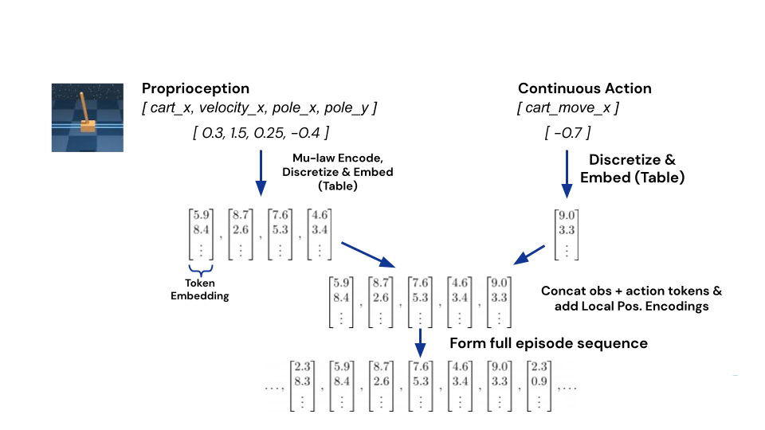
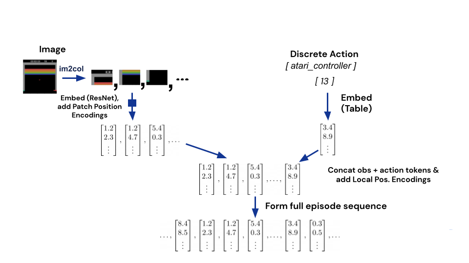
부록 C 모델 아키텍처
C.1 트랜스포머 하이퍼파라미터
| Hyperparameter | Gato 1.18B | 364M | 79M |
| Transformer blocks | 24 | 12 | 8 |
| Attention heads | 16 | 12 | 24 |
| Layer width | 2048 | 1536 | 768 |
| Feedforward hidden size | 8192 | 6144 | 3072 |
| Key/value size | 128 | 128 | 32 |
| Shared embedding | True | ||
| Layer normalization | Pre-norm | ||
| Activation Function | GEGLU (Shazeer, 2020) | ||
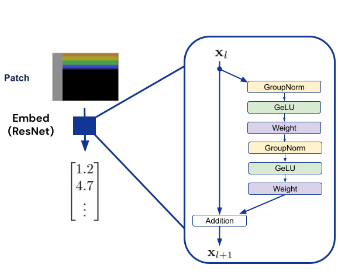
C.2 임베딩 함수
ResNet 블록은 v2 아키텍처 (He et al., 2016b)를 사용하며, LayerNorm (Ba et al., 2016) 대신 32개 그룹을 갖는 GroupNorm (Wu & He, 2018)을 포함하고, RELU 대신 GELU (Hendrycks & Gimpel, 2016) 활성화 함수를 사용한다. 이 블록의 다이어그램은 그림 16에 나와 있다.
C.3 위치 인코딩
토큰이 토큰 임베딩으로 매핑된 후, 모델에 시간적 및 공간적 정보를 제공하기 위해 (해당되는 경우) 두 가지 위치 인코딩이 토큰 임베딩에 추가된다. 이에 대한 설명은 아래와 같다.
패치 위치 인코딩
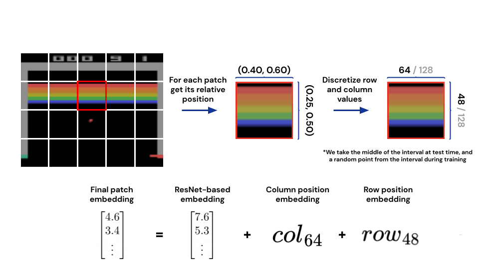
이 위치 인코딩은 패치가 추출된 이미지 내에서의 패치의 전역 위치에 대한 정보를 전달한다. 먼저, 패치의 픽셀 구간을 이미지 해상도로 정규화하여 패치의 상대적인 행 및 열 구간을 계산한다. 정규화된 행 및 열 구간은 어휘 사전 크기(여기서는 128 사용)로 양자화되며, 학습 가능한 위치 인코딩의 행 및 열 테이블을 인덱싱하는 데 사용된다. 양자화된 행 및 열 구간을 인덱스로 변환하는 방법은 모델을 학습하는 중인지 또는 평가하는 중인지에 따라 달라진다. 학습 중에는 양자화된 구간에서 무작위 인덱스를 균등하게 샘플링하는 반면, 평가 중에는 구간의 (반올림된) 평균값을 결정론적으로 취한다. 임베딩 테이블에서 행 및 열 위치 인코딩을 가져오면, 앞서 설명한 대로 ResNet 임베딩 함수에 의해 생성된 토큰 임베딩에 더해진다.
이 과정을 더 구체적으로 보여주기 위해 그림 17에 예시를 제공한다. 소그림 왼쪽의 빨간색으로 강조된 패치를 통해 과정을 따라가 본다. 이미지의 해상도는 이고 각 패치는 이므로 총 개의 패치가 존재한다. 강조된 패치는 픽셀 행 구간 와 픽셀 열 구간 에서 시작한다. 따라서 정규화된 행 구간은 이고 열 구간은 이다. 그런 다음 이 구간들을 128개의 균등한 간격의 빈(bin)으로 개별적으로 양자화하며, 그 결과 양자화된 행 구간은 , 양자화된 열 구간은 가 된다. 학습 중에는 양자화된 행 구간 사이의 정수를 균등하게 샘플링하는 반면, 테스트 중에는 평균값을 사용하여 행 위치의 경우 인덱스 48, 열 위치의 경우 인덱스 64를 사용한다. 마지막으로 행 및 열 위치는 별도의 행 및 열 위치 인코딩 테이블을 인덱싱하여 학습 가능한 임베딩을 생성하고, 이는 대응하는 패치 토큰 임베딩에 더해진다.
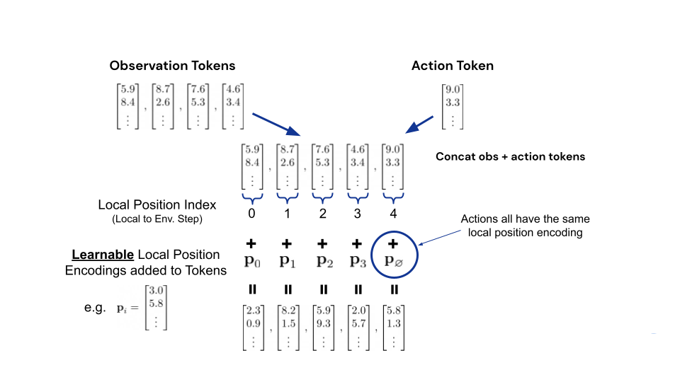
로컬 관측 위치 인코딩
지역 관측치 위치 인코딩(local observation position encoding)은 관측치 토큰이 자신이 속한 지역 타임스텝 내에서 어디에 위치하는지에 대한 위치 정보를 추가한다. 먼저, 토큰화 과정에서 각 타임스텝의 관측치 세트의 모든 요소가 시퀀스로 토큰화되고 하나의 관측치 시퀀스로 병합된다는 점을 재차 강조한다. 이 관측치 시퀀스의 각 토큰에는 시퀀스 순서에 해당하는 인덱스가 부여된다. 즉, 첫 번째 토큰은 0이고 마지막 토큰은 관측치 시퀀스 길이에 1을 뺀 값이다. 임베딩 후, 관측치 세트의 일부였던 모든 토큰에 대해, 해당 관측치 토큰 인덱스를 사용하여 학습 가능한 위치 인코딩의 임베딩 테이블을 인덱싱하며, 가능한 모든 관측치 토큰 인덱스에 대해 하나의 임베딩이 존재한다(실제로는 테이블 크기를 512와 같이 큰 값으로 간단히 설정한다). 그런 다음 위치 인코딩을 관측치 토큰 임베딩에 더하여 최종 토큰 임베딩을 생성한다. 타임스텝 시퀀스에서의 위치에 관계없이 모든 행동 토큰에는 동일한 위치 인코딩이 부여된다는 점에 유의한다. 이 과정의 예시를 그림 18에 나타내었다.
부록 D 사전 학습 설정
옵티마이저: 모든 모델에 대해 선형 웜업(linear warm-up) 및 코사인 스케줄 감쇠(cosine schedule decay)가 적용된 AdamW (Loshchilov & Hutter, 2017) 옵티마이저를 사용한다. 선형 웜업은 스텝 동안 지속되며, 1e-7의 학습률에서 시작하여 모델에 따라 다른 최대 학습률에서 끝난다(표 6 참조). 이 학습률은 이후 1,000,000 스텝에 걸쳐 10배만큼 코사인 감쇠된다. AdamW 옵티마이저의 매개변수는 , 및 1e-8이다. 모든 모델에 대해 배치 크기는 , 시퀀스 길이는 토큰을 사용한다.
규제화(Regularization): 우리는 0.1의 AdamW 가중치 감쇠(weight decay) 매개변수로 학습한다. 또한, 사전 학습 중에 stochastic depth (Huang et al., 2016)를 사용하며, 여기서 각 트랜스포머 서브 레이어(즉, 각 Multi-Head Attention 및 Dense Feedforward 레이어)는 0.1의 확률로 건너뛴다.
| Hyperparameter | Gato 1.18B | 364M | 79M |
| Maximum Learning Rate | 1e-4 | 2e-4 | 1e-4 |
| Minimum Learning Rate | 1e-5 | 2e-5 | 1e-5 |
부록 E 미세 조정(Fine-tuning) 설정
옵티마이저: 모든 모델에 대해 1e-5의 일정한 학습률을 갖는 Adam (Kingma & Ba, 2014) 옵티마이저를 사용한다. Adam 옵티마이저의 매개변수는 , 및 1e-8이다. 모든 모델에 대해 배치 크기는 , 시퀀스 길이는 토큰을 사용한다. 우리는 10,000 그래디언트 스텝 동안 학습한다.
규제화(Regularization): 우리는 0.1 비율의 드롭아웃(dropout) (Srivastava et al., 2014)을 사용한다.
평가: 우리는 100 학습 스텝마다 에이전트를 평가한다. 각 평가는 주어진 체크포인트의 10회 실행 평균을 보고한다. 이러한 점수 5개의 이동 평균을 계산한다(50회 실행을 함께 모으기 위함). 최종 미세 조정 성능은 이러한 평활화된 점수의 최댓값으로 정의된다.
데이터셋: 우리는 다른 태스크에서 했던 것과 동일한 방식으로 미세 조정 태스크를 위한 데이터를 생성했다(자세한 내용은 섹션 3.1 참조). 미세 조정 태스크의 모든 데이터를 사용하는 대신, 가장 좋은 2000개의 에피소드(가장 높은 리턴을 기록한 에피소드)를 제외하고 모두 버렸다. 미세 조정 데이터셋은 다음과 같은 방식으로 생성되었다. 사전 선택된 2000개의 에피소드 중 무작위로 1000개의 에피소드를 선택한 다음, 선택된 에피소드에서 100개의 에피소드 서브셋을 선택하고, 이어서 10개, 5개, 3개, 마지막으로 단일 에피소드를 선택했다. 각 태스크에 대해 3개의 계단식 서브셋 시리즈를 얻기 위해 이 절차를 3번 반복했다. 각 서브셋은 하나의 미세 조정 실험을 수행하는 데 사용되며, 각각은 섹션 5.2의 플롯에 별도의 점으로 표시된다.
태스크 설정: 우리는 태스크를 변경하지 않고 표준 버전을 사용했다. 4개 태스크 중 3개는 오픈 소스이므로 추가 설명이 필요하지 않다. 네 번째 태스크인 DMLab order_of_apples_forage_simple의 목표는 올바른 순서로 사과를 수집하는 것이며, 초록색 사과를 먼저 수집한 다음 황금색 사과를 수집해야 한다.
부록 F 데이터 수집 상세 정보
F.1 Atari
우리는 두 개의 개별 Atari 환경 세트를 수집한다. 첫 번째(ALE Atari라고 함)는 Arcade Learning Environment (Bellemare et al., 2013)의 51개 표준 게임으로 구성된다. 두 번째(ALE Atari Extended라고 함)는 각 에피소드가 시작될 때 게임 모드와 난이도가 무작위로 설정되는 대체 게임 세트 333Basic Math, Breakout, Crossbow, Darkchambers, Entombed, ET, Flag Capture, Human Cannonball, Klax, Laser Gates, Ms. Pac-Man, Solaris, Space War. 이다.
이 세트의 각 환경에 대해 우리는 총 2억(200M) 환경 스텝 동안 Muesli (Hessel et al., 2021) 에이전트를 학습시켜 데이터를 수집한다. 학습 중 에이전트가 생성한 약 20,000개의 무작위 에피소드를 기록한다.
F.2 소코반 (Sokoban)
F.3 BabyAI
BabyAI는 합성 언어로 기술된 지시 수행 태스크들로 레벨이 구성된 그리드월드(gridworld) 환경이다. 우리는 내장된 BabyAI 봇을 사용하여 이러한 레벨에 대한 데이터를 생성한다. 이 봇은 최적의 솔루션을 실행하는 데 사용되는 추가 정보에 접근할 수 있으며, 봇에 대한 자세한 내용은 (Chevalier-Boisvert et al., 2018)의 부록 C 섹션을 참조하라. 우리는 각 레벨마다 100,000개의 에피소드를 수집한다.
F.4 DeepMind Control Suite
DeepMind Control Suite (Tunyasuvunakool et al., 2020; Tassa et al., 2018)는 물리 기반 시뮬레이션 환경 모음이다. 제어 스위트(control suite)의 각 태스크에 대해 우리는 두 개의 서로소 데이터 세트를 수집하는데, 하나는 상태 특징(state features)만 사용하고 다른 하나는 픽셀(pixels)만 사용한다. 상태 특징을 사용하는 태스크에서 데이터를 수집하기 위해 D4PG (Barth-Maron et al., 2018) 에이전트를 사용하고, 픽셀을 사용하여 데이터를 수집하기 위해 MPO (Abdolmaleki et al., 2018) 기반 에이전트를 사용한다.
우리는 또한 D4PG 에이전트를 사용하여 제어 스위트 태스크의 무작위화된 버전에 대한 데이터를 수집한다. 이 버전들은 액추에이터 기어(actuator gear), 관절 범위(joint range), 강성(stiffness) 및 감쇠(damping), 그리고 기하학적 형상(geom)의 크기와 밀도를 무작위화한다. 무작위화된 버전에는 두 가지 난이도 설정이 있다. small 설정은 구간 의 합집합에서 샘플링된 무작위 수로 값을 스케일링한다. large 설정은 구간 의 합집합에서 샘플링된 무작위 수로 값을 스케일링한다.
F.5 DeepMind Lab
DeepMind Lab (Beattie et al., 2016)은 에이전트에게 자기중심적 시점(egocentric viewpoint)의 원시 픽셀 입력으로부터 3D 비전, 내비게이션 및 계획(planning)을 가르치기 위해 설계된 1인칭 3D 환경이다.
우리는 각 새로운 에피소드마다 절차적으로 맵을 생성하는 18개의 부모 DM Lab 레벨 세트에서 IMPALA (Espeholt et al., 2018) 에이전트를 공동으로 훈련시켰다. 데이터는 이 18개 레벨에서 에이전트를 실행하여 수집되었으며, 다양한 기술을 테스트하기 위해 수작업으로 제작된 237개의 추가 레벨 세트에서도 수집되었다.
18개의 부모 레벨은 생성된 맵의 높은 다양성을 특징으로 한다. 레벨 간의 차이는 생성 프로세스에 사용되는 하이퍼파라미터에 기인한다. 이러한 하이퍼파라미터는 생성되는 구조물의 유형, 언어 지시의 난이도, 또는 특정 도구의 존재 여부와 같은 상위 수준의 특성을 제어한다. 부모 레벨은 온라인으로 훈련되는 RL 에이전트의 성능을 향상시키기 위해 개발되었다.
부모 레벨과 대조적으로, 수작업으로 제작된 237개의 추가 레벨 각각은 거의 동일한 맵을 사용하며, 동일한 레벨 맵의 인스턴스 간의 주요 차이점은 벽의 색상이나 조명 조건과 같은 미적 요소이다. 맵은 절차적으로 생성되지 않으며, 계단을 오르거나 특정 도구를 사용하는 것과 같은 다양한 기술을 테스트하도록 설계되었다. 이들은 앞서 언급한 Beattie et al. (2016)의 논문 내 그림 3, 그림 7 및 그림 8에 제시된 레벨들과 유사하다.
18개의 부모 레벨(및 다른 레벨과의 관계)에 대한 추가 정보는 Daniel Tanis의 NeurIPS 워크숍 발표 A Methodology for RL Environment Research에 자세히 소개되어 있다444https://neurips.cc/virtual/2021/workshop/21865#wse-detail-22801에서 이용 가능..
총합하여, 우리는 DeepMind Lab에서 255개 레벨(부모 레벨 18개 및 수작업 레벨 237개)에 대한 데이터를 수집했으며, 그 중 254개가 Gato 훈련 중에 사용되었다. 나머지 레벨은 분포 외(out of distribution) 평가에 사용되었다.
F.6 Procgen Benchmark
Procgen (Cobbe et al., 2020)은 강화학습에서 샘플 효율성과 일반화 능력을 벤치마킹하기 위해 제안된 16개의 절차적으로 생성되는 아타리(Atari) 유사 환경 모음이다. 데이터 수집은 각 환경에서 R2D2 (Kapturowski et al., 2018) 에이전트를 훈련하는 동안 수행되었다. 우리는 maze와 heist를 제외한 모든 환경에 대해 hard 난이도 설정을 사용했으며, 이 두 환경은 easy로 설정했다.
F.7 Modular RL
Modular RL (Huang et al., 2020)은 MuJoCo (Todorov et al., 2012) 기반의 연속 제어 환경 모음으로, OpenAI Gym (Brockman et al., 2016)의 Walker2d-v2, Humanoid-v2, Hopper-v2의 세 가지 변형 세트로 구성되어 있다. 각 변형은 원래 신체의 형태학적 수정본이다. 형태(morphology) 세트는 사지(limbs)의 가능한 모든 부분집합을 나열하고, a) 몸통(torso)을 포함하고 b) 여전히 연결된 그래프를 형성하는 세트만 유지함으로써 생성된다. 이는 원래 형태와 다른 동역학뿐만 아니라 서로 다른 입력 및 출력 크기를 갖는 변형 세트를 생성한다. 우리는 각 변형에 대해 단일 형태 특정(morphology-specific) D4PG 에이전트를 총 140M 액터 스텝 동안 훈련하여 데이터를 수집했으며, 이는 변형당 30개의 무작위 시드(seed)에 대해 수행되었다.
F.8 DeepMind Manipulation Playground
F.9 Meta-World
Meta-World (Yu et al., 2020)는 메타 강화학습 및 다중 작업 학습(multi-task learning)을 벤치마킹하기 위한 환경 모음555우리는 2021년 7월 23일 버전을 사용했으며, 구체적으로는 다음 버전인 https://github.com/rlworkgroup/metaworld/commit/a0009ed9a208ff9864a5c1368c04c273bb20dd06을 사용했다.이다. 우리는 무제한의 환경 시드와 MuJoCo 물리 엔진의 상태에 접근할 수 있는 권한을 가진 MPO 에이전트 (Abdolmaleki et al., 2018)를 훈련하여 MT50 모드의 모든 훈련 및 테스트 작업에서 데이터를 수집한다. 수집된 데이터에는 MuJoCo 물리 엔진 상태도 포함되어 있다.
부록 G 실제 로보틱스 평가 세부사항
실제 세계에서 제어는 비동기적이다. 즉, 물리는 계산이 끝나기를 기다려주지 않는다. 따라서 추론 지연 시간(inference latency)은 실제 세계 작업을 위한 대형 모델을 평가할 때 중요한 고려 사항이다. 로보틱스에서는 동적인 현상에 반응하기 위해 빠른 제어 속도(control rate)가 필수적인 것으로 여겨진다. RGB 쌓기(RGB stacking)를 위한 로봇 설정은 설계상 20Hz 제어 속도(0.05초 타임스텝)를 가진다. 허용 가능한 지연 시간 마진에 도달하기 위해, 우리는 평가 시점에 컨텍스트 길이를 1로 단축하여 추론을 수정했다. 또한 훈련 중에 입력 시퀀스의 모든 행동 토큰을 0으로 설정하여, 다른 도메인에서처럼 자동회귀적(autoregressively)으로 샘플링하는 대신 단일 모델 추론 단계에서 로봇 행동에 해당하는 모든 토큰을 샘플링할 수 있는 병렬 샘플링 방식을 구현했다. 우리는 1.18B 매개변수 모델이 로봇의 하드웨어 가속기(NVidia GeForce RTX 3090)에서 실행될 수 있었으나, 여전히 20Hz 제어 속도를 아주 미세하게(~0.01초) 초과한다는 것을 발견했다.
우리는 데이터 필터링을 위해 Lee et al. (2021)에 기술된 희소 보상(sparse reward) 함수를 사용한다. 우리는 최종 작업 성공, 즉 최종 타임스텝에서 희소 보상이 1인 궤적(trajectory)만 선택한다.
부록 H Skill Mastery 아키텍처
Skill Mastery 벤치마크에 대해 보고된 수치는 Gato 아키텍처의 이전 버전을 사용한 모델을 제로샷(zero-shot)으로 실행하여 수집된 것이다. ResNet 패치 임베딩 대신, 로컬 트랜스포머(local transformer)를 사용하는 유사한 아키텍처가 이미지 패치 토큰을 임베딩하는 데 사용되었다. 로컬 위치 임베딩과 패치 위치 임베딩은 사용되지 않았다. 이러한 변경 사항들은 사전 훈련 데이터가 변경된 후(우리가 Skill Mastery 챌린지 대신 Skill Generalization에 집중하기로 결정함에 따라) Gato의 성능을 향상시키는 것으로 확인되어 구현되었으며, 이것이 이들이 우리 전체 모델의 최종 아키텍처로 제시된 이유이다.
부록 I 추가 로보틱스 소거 연구
우리는 로보틱스 도메인에서 다양한 사전 훈련 데이터의 효과를 더 잘 이해하기 위해 시뮬레이션에서 일련의 소거 연구(ablation)를 수행했다(그림 19 참조). 섹션 5.2에서와 동일한 베이스라인들을 포함하여 364M 매개변수 크기 변형을 선택했으며, 제어 제품군(control suite) 데이터로만 훈련된 추가 베이스라인도 포함했다. DM Control 전용 에이전트는 제로샷 전이 및 많은 미세 조정 데이터가 있을 때 기본 Gato보다 우수하며, 이는 Gato가 로보틱스 작업에 적응할 때 텍스트 기반 데이터셋에서 학습한 표현을 활용하지 못하고 있을 수 있음을 시사한다. 동일 도메인 전용 에이전트가 전반적으로 가장 우수한 성능을 보여, 1회의 미세 조정 에피소드에서 CRR 베이스라인과 일치하고 더 많은 데이터가 있을 때 이를 능가했다. 이는 현재 규모의 Gato가 데이터 효율적이고 효과적인 퓨샷(few-shot) 적응을 위해 일반화 능력을 절충할 수 있음을 시사한다.
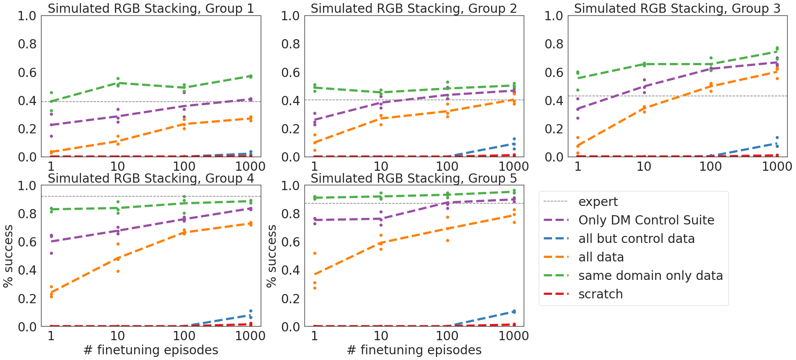
부록 J 어텐션 시각화
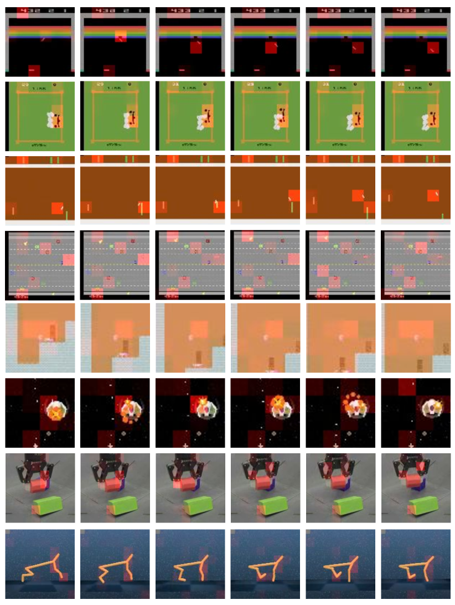
트랜스포머 어텐션 가중치를 렌더링하기 위해, 우리는 차원이 인 교차 어텐션(cross-attention) 로짓 텐서를 추출했다. 여기서 은 헤드의 수이고 는 시퀀스의 토큰 수이다. 이 행렬의 번째 엔트리는 헤드 가 토큰 으로부터 토큰 에 어텐션을 기울이는 정도로 해석될 수 있다. Gato의 이미지 토큰화 방식 때문에 타임스텝당 여러 토큰이 존재한다. 따라서 특정 타임스텝에 대한 어텐션을 렌더링하기 위해 해당 타임스텝에 해당하는 하위 행렬을 취했다. 그런 다음 관련 값들을 정규화하기 위해 이 행렬의 행에 대해 소프트맥스(softmax)를 적용했다. 우리는 이전 토큰들에 대한 어텐션에만 관심이 있기 때문에, 소프트맥스를 적용하기 전에 대각 성분을 음의 무한대로 설정하여 제외했다.
각 패치의 중요도를 측정하기 위해, 해당하는 열에 대해 어텐션 가중치를 평균했다. Gato는 인과적 트랜스포머(causal transformer)를 사용하므로 어텐션 행렬은 하삼각 행렬이며, 따라서 평균은 행렬의 대각선 아래 하위 열에 대해서만 고려되었다. 이는 전체 타임스텝에 걸쳐 특정 패치에 지불된 평균 어텐션에 대응한다.
부록 K 전문가 Meta-World 에이전트의 상세 결과
섹션 5.5에서 설명한 전문가 Meta-World 에이전트는 모든 50개의 Meta-World 작업에 대해 평균 96.6%의 성공률을 달성한다. 상세한 성공률은 표 7에 제시되어 있다. 우리는 각 작업에 대해 에이전트를 500회 평가했다.
| Task name | Success rate |
| assembly-v2 | 0.980 |
| basketball-v2 | 0.964 |
| bin-picking-v2 | 0.954 |
| box-close-v2 | 0.958 |
| button-press-topdown-v2 | 0.996 |
| button-press-topdown-wall-v2 | 0.998 |
| button-press-v2 | 0.996 |
| button-press-wall-v2 | 1.000 |
| coffee-button-v2 | 1.000 |
| coffee-pull-v2 | 0.980 |
| coffee-push-v2 | 0.974 |
| dial-turn-v2 | 0.916 |
| disassemble-v2 | 0.924 |
| door-close-v2 | 0.994 |
| door-lock-v2 | 0.986 |
| door-open-v2 | 1.000 |
| door-unlock-v2 | 0.994 |
| drawer-close-v2 | 1.000 |
| drawer-open-v2 | 0.992 |
| faucet-close-v2 | 0.982 |
| faucet-open-v2 | 0.996 |
| hammer-v2 | 0.998 |
| hand-insert-v2 | 0.960 |
| handle-press-side-v2 | 0.972 |
| handle-press-v2 | 0.946 |
| handle-pull-side-v2 | 0.992 |
| handle-pull-v2 | 0.992 |
| lever-pull-v2 | 0.980 |
| peg-insert-side-v2 | 0.992 |
| peg-unplug-side-v2 | 0.994 |
| pick-out-of-hole-v2 | 0.966 |
| pick-place-v2 | 0.990 |
| pick-place-wall-v2 | 0.986 |
| plate-slide-back-side-v2 | 1.000 |
| plate-slide-back-v2 | 0.994 |
| plate-slide-side-v2 | 1.000 |
| plate-slide-v2 | 0.984 |
| push-back-v2 | 0.984 |
| push-v2 | 0.944 |
| push-wall-v2 | 0.784 |
| reach-v2 | 0.796 |
| reach-wall-v2 | 0.802 |
| shelf-place-v2 | 0.958 |
| soccer-v2 | 0.968 |
| stick-pull-v2 | 0.882 |
| stick-push-v2 | 0.966 |
| sweep-into-v2 | 0.962 |
| sweep-v2 | 0.948 |
| window-close-v2 | 1.000 |
| window-open-v2 | 1.000 |
| Average | 0.966 |
부록 L Gato의 도메인별 결과
우리는 Section 4.1에서 시뮬레이션된 제어 작업에 대한 Gato의 성능을 설명한다. Table 8에서는 도메인별 정규화된 결과를 제시한다. 우리는 각 작업에 대해 에이전트를 50회 평가했다.
| Control environment | Normalized Score (in %) |
| DM Lab | 91.4 |
| ALE Atari | 30.9 |
| ALE Atari Extended | 57.8 |
| Sokoban | 68.0 |
| BabyAI | 93.2 |
| DM Control Suite | 63.6 |
| DM Control Suite Pixels | 26.3 |
| Meta-World | 87.0 |
| Procgen Benchmark | 60.8 |
| RGB Stacking simulator | 58.0 |
| Modular RL | 62.9 |
| DM Manipulation Playground | 83.8 |